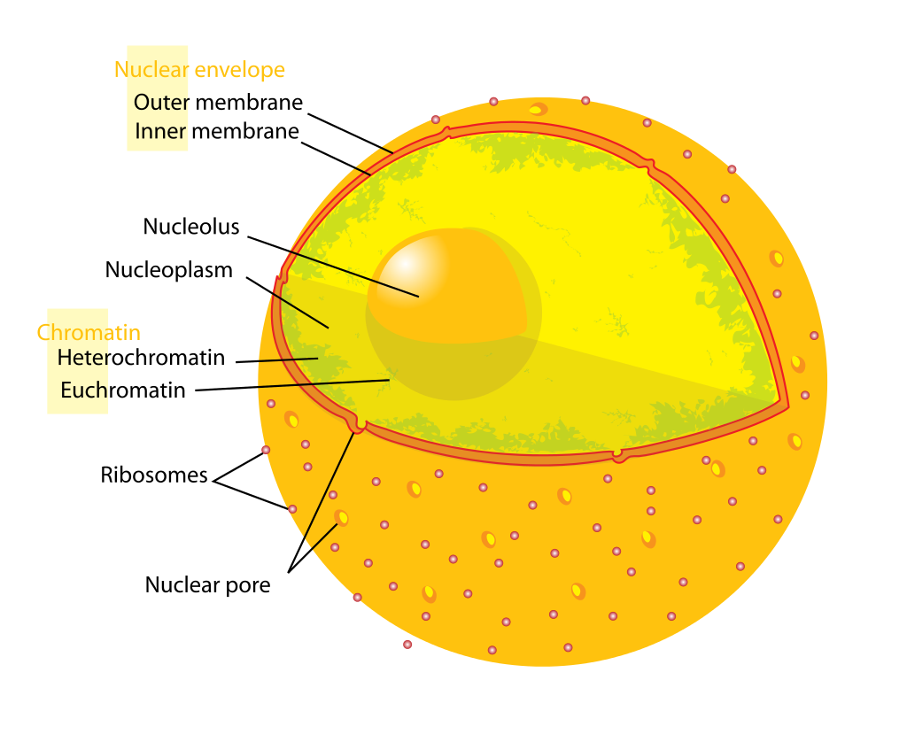

overview of cell
description::
× Mcsh-creation: {2020-03-23}
analytic: τελικός'ορισμός'ανάλυσης για το ανθρώπινο σώμα.
===
κύτταρα είναι βιολογικες μοναδες, μερη ιστών που εκτελούν βιολογικες λειτουργιες.
[hmnSngo, {1995-02}]
===
synthetic: αρχικός ορισμός σύνθεσης για το ανθρώπινο-σώμα.
===
το κύτταρο δεν μπορεί να οριστεί σαν σύνθεση άλλων βιολογικων μοναδων.
===
το κύτταρο έχει τρείς κύριες πρωτοπλασματικές διαφοροποιήσεις:
- τον πυρήνα,
- το κυτταρόπλασμα και
- την κυτταρική (πλασματική) μεμβράνη.
[Αργύρης, {1994}, 7⧺cptRsc29⧺]
===
"κύτταρο: η μικρότερη πλήρης βιολογικη μοναδα"
[Αργύρης, {1994}, 146]
"το κύτταρο μπορεί να θεωρηθει σαν το πρώτο επίπεδο οργάνωσης της εμβιας υλης"
[⧺cptRsc29⧺Αργύρης, {1994}, 7⧺cptRsc29⧺]
===
η βασική δομική και λειτουργική μονάδα που εκδηλώνει το φαινόμενο της ζωής είναι το κύτταρο.
[Αργύρης, {1994}, 9⧺cptRsc31⧺]
definition::
specific-definition:
· human-cell is the-eukaryotic-cell of humans.
===
generic-definition:
·
===
part-definition:
· cell is the-main part of tissue.
===
whole-definition:
·
name::
* McsEngl.McsHlth000004.last.html//dirHlth//dirMcsh!⇒cell,
* McsEngl.dirMcsh/dirHlth/McsHlth000004.last.html!⇒cell,
* McsEngl.bodyHmn'09_cell!⇒cell,
* McsEngl.bodyHmn'att014-cell!⇒cell,
* McsEngl.bodyHmn'cell-att014!⇒cell,
* McsEngl.cell, {2012-08-11},
* McsEngl.cell!~McsHlth000004,
* McsEngl.cell!=human-cell,
* McsEngl.cellHmn!⇒cell,
* McsEngl.cellOgm.001-human!⇒cell,
* McsEngl.cellOgm.human-001!⇒cell,
* McsEngl.cell.human!⇒cell,
* McsEngl.human-cell!⇒cell,
====== lagoSinagu:
* McsSngu.selo!=cell,
====== lagoChinese:
* McsZhon.xìbāo-细胞-(細胞)!=cell,
* McsZhon.xìbāo-细胞-(細胞)!=cell,
* McsZhon.细胞-(細胞)-xìbāo!=cell,
====== lagoGreek:
* McsElln.κύτταρο!=cell,
* McsElln.κύτταρο.ανθρώπινο,
* McsElln.κύτταρο-ανθρώπινου-σώματος,
01_disease of cell
name::
* McsEngl.cell'01_disease-001,
* McsEngl.cell'disease-001,
* McsEngl.cell'att001-disease,
* McsEngl.disease.251-cell,
* McsEngl.disease.cell-251,
description::
· disease on cell level.
02_membrane of cell
description::
· The cell membrane is a selectively permeable lipid bilayer embedded with proteins that encloses the cell, regulates the transport of substances in and out, and mediates signaling and adhesion.
name::
* McsEngl.cell'02_membrane-002,
* McsEngl.cell'membrane-002,
* McsEngl.cell'att002-membrane,
03_cytoplasm of cell
name::
* McsEngl.cell'03_cytoplasm-004,
* McsEngl.cell'cytoplasm-004,
* McsEngl.cell'att004-cytoplasm,
description::
"In cell biology, the cytoplasm is all of the material within a cell, enclosed by the cell membrane, except for the cell nucleus. The material inside the nucleus and contained within the nuclear membrane is termed the nucleoplasm. The main components of the cytoplasm are cytosol – a gel-like substance, the organelles – the cell's internal sub-structures, and various cytoplasmic inclusions. The cytoplasm is about 80% water and usually colorless.[1]
The submicroscopic ground cell substance, or cytoplasmatic matrix which remains after exclusion the cell organelles and particles is groundplasm. It is the hyaloplasm of light microscopy, and high complex, polyphasic system in which all of resolvable cytoplasmic elements of are suspended, including the larger organelles such as the ribosomes, mitochondria, the plant plastids, lipid droplets, and vacuoles.
Most cellular activities take place within the cytoplasm, such as many metabolic pathways including glycolysis, and processes such as cell division. The concentrated inner area is called the endoplasm and the outer layer is called the cell cortex or the ectoplasm.
Movement of calcium ions in and out of the cytoplasm is a signaling activity for metabolic processes.[2]"
[{2020-03-22} https://en.wikipedia.org/wiki/Cytoplasm]
cytosol of cell
name::
* McsEngl.cell'cytosol,
* McsEngl.cell'att018-cytosol,
description::
"The cytosol, also known as intracellular fluid (ICF) or cytoplasmic matrix, or groundplasm,[2] is the liquid found inside cells.[3] It is separated into compartments by membranes. For example, the mitochondrial matrix separates the mitochondrion into many compartments.
In the eukaryotic cell, the cytosol is surrounded by the cell membrane and is part of the cytoplasm, which also comprises the mitochondria, plastids, and other organelles (but not their internal fluids and structures); the cell nucleus is separate. The cytosol is thus a liquid matrix around the organelles. In prokaryotes, most of the chemical reactions of metabolism take place in the cytosol, while a few take place in membranes or in the periplasmic space. In eukaryotes, while many metabolic pathways still occur in the cytosol, others take place within organelles.
The cytosol is a complex mixture of substances dissolved in water. Although water forms the large majority of the cytosol, its structure and properties within cells is not well understood. The concentrations of ions such as sodium and potassium are different in the cytosol than in the extracellular fluid; these differences in ion levels are important in processes such as osmoregulation, cell signaling, and the generation of action potentials in excitable cells such as endocrine, nerve and muscle cells. The cytosol also contains large amounts of macromolecules, which can alter how molecules behave, through macromolecular crowding.
Although it was once thought to be a simple solution of molecules, the cytosol has multiple levels of organization. These include concentration gradients of small molecules such as calcium, large complexes of enzymes that act together and take part in metabolic pathways, and protein complexes such as proteasomes and carboxysomes that enclose and separate parts of the cytosol."
[{1994} https://en.wikipedia.org/wiki/Cytosol]
04_nucleus of cell
name::
* McsEngl.cell'04_nucleus-003,
* McsEngl.cell'nucleus-003,
* McsEngl.cell'att003-nucleus-003,
* McsEngl.nucleus-of-cell,
====== lagoGreek:
* McsElln.πυρήνας-ανθρώπινου-κυττάρου!=cell'nucleus,
description::

analytic: πυρήνας είναι ένα από τα τρία μέρη του κυττάρου.
το κύτταρο έχει τρείς κύριες πρωτοπλασματικές διαφοροποιήσεις::
- τον πυρήνα,
- το κυτταρόπλασμα και
- την κυτταρική (πλασματική) μεμβράνη.
[Αργύρης,, 7⧺cptRsc29⧺]
===
synthetic: ο πυρήνας αποτελείται από χρωμοσώματα.
generic-tree-of-::
* cell-nucleus⧺cptEpistem658⧺,
membrane of nucleus
name::
* McsEngl.cell'nucleus'envelope,
* McsEngl.cell'nucleus'membrane,
* McsEngl.cell'att029-nuclear-envelope,
* McsEngl.nuclear-membrane-of-cell,
description::
"The nuclear envelope, also known as the nuclear membrane,[1][a] is made up of two lipid bilayer membranes which in eukaryotic cells surrounds the nucleus, which encases the genetic material.
The nuclear envelope consists of two lipid bilayer membranes, an inner nuclear membrane, and an outer nuclear membrane.[4] The space between the membranes is called the perinuclear space. It is usually about 20–40 nm wide.[5][6] The outer nuclear membrane is continuous with the endoplasmic reticulum membrane.[4] The nuclear envelope has many nuclear pores that allow materials to move between the cytosol and the nucleus.[4] Intermediate filament proteins called lamins form a structure called the nuclear lamina on the inner aspect of the inner nuclear membrane and gives structural support to the nucleus.[4]"
[{2020-03-23} https://en.wikipedia.org/wiki/Nuclear_envelope]
nucleolus of nucleus
name::
* McsEngl.cell'nucleus'nucleolus, /nnukleólus/,
* McsEngl.cell'nucleolus,
* McsEngl.nucleolus-of-cell,
* McsEngl.cell'att019''nucleolus,
description::
"The nucleolus (/nuː-, njuːˈkliːələs, -kliˈoʊləs/, plural: nucleoli /-laɪ/) is the largest structure in the nucleus of eukaryotic cells.[1] It is best known as the site of ribosome biogenesis. Nucleoli also participate in the formation of signal recognition particles and play a role in the cell's response to stress.[2] Nucleoli are made of proteins, DNA and RNA and form around specific chromosomal regions called nucleolar organizing regions. Malfunction of nucleoli can be the cause of several human conditions called "nucleolopathies"[3] and the nucleolus is being investigated as a target for cancer chemotherapy.[4][5]"
[{2020-03-23} https://en.wikipedia.org/wiki/Nucleolus]
structure of nucleus
description::
× Mcsh-creation: {2026-05-15}
* chromosome,
===
στον πυρήνα κάθε κυττάρου του ανθρώπου υπάρχουν 23 ζευγάρια χρωμοσωμάτων.
[Βήμα, {1995-03-05}, α35 αλαχιωτης]
name::
* McsEngl.nucleus'structure,
05_organelle of cell
name::
* McsEngl.cell'05_organelle, /o-rga-nél/,
* McsEngl.cell'organelle,
* McsEngl.cell'att017-organelle,
description::
"In cell biology, an organelle is a specialized subunit within a cell that has a specific function. Organelles are either separately enclosed within their own lipid bilayers (also called membrane-bound organelles) or are spatially distinct functional units without a surrounding lipid bilayer (non-membrane bound organelles).
The name organelle comes from the idea that these structures are parts of cells, as organs are to the body, hence organelle, the suffix -elle being a diminutive. Organelles are identified by microscopy, and can also be purified by cell fractionation. There are many types of organelles, particularly in eukaryotic cells. While prokaryotes do not possess organelles per se, some do contain protein-based bacterial microcompartments, which are thought to act as primitive organelles.[1]"
[{2020-03-23} https://en.wikipedia.org/wiki/Organelle]
ribosome of cell
name::
* McsEngl.cell'ribosome, /ráibosom/,
* McsEngl.cell'att021-ribosome,
* McsEngl.ribosome-of-cell,
description::
"Ribosomes (/ˈraɪbəˌsoʊm, -boʊ-/[1]) (named also Palade's corpuscles) comprise a complex macromolecular machine, found within all living cells, that serves as the site of biological protein synthesis (translation). Ribosomes link amino acids together in the order specified by messenger RNA (mRNA) molecules. Ribosomes consist of two major components: the small ribosomal subunits, which read the mRNA, and the large subunits, which join amino acids to form a polypeptide chain. Each subunit consists of one or more ribosomal RNA (rRNA) molecules and a variety of ribosomal proteins (r-protein or rProtein[2][3][4]). The ribosomes and associated molecules are also known as the translational apparatus."
[{2020-03-23} https://en.wikipedia.org/wiki/Ribosome]
vesicle of cell
name::
* McsEngl.cell'vesicle,
* McsEngl.cell'att022-vesicle,
description::
"In cell biology, a vesicle is a structure within or outside a cell, consisting of liquid or cytoplasm enclosed by a lipid bilayer. Vesicles form naturally during the processes of secretion (exocytosis), uptake (endocytosis) and transport of materials within the plasma membrane. Alternatively, they may be prepared artificially, in which case they are called liposomes (not to be confused with lysosomes). If there is only one phospholipid bilayer, they are called unilamellar liposome vesicles; otherwise they are called multilamellar. The membrane enclosing the vesicle is also a lamellar phase, similar to that of the plasma membrane, and intracellular vesicles can fuse with the plasma membrane to release their contents outside the cell. Vesicles can also fuse with other organelles within the cell. A vesicle released from the cell is known as an extracellular vesicle..
Vesicles perform a variety of functions. Because it is separated from the cytosol, the inside of the vesicle can be made to be different from the cytosolic environment. For this reason, vesicles are a basic tool used by the cell for organizing cellular substances. Vesicles are involved in metabolism, transport, buoyancy control,[1] and temporary storage of food and enzymes. They can also act as chemical reaction chambers.
The 2013 Nobel Prize in Physiology or Medicine was shared by James Rothman, Randy Schekman and Thomas Südhof for their roles in elucidating (building upon earlier research, some of it by their mentors) the makeup and function of cell vesicles, especially in yeasts and in humans, including information on each vesicle's parts and how they are assembled. Vesicle dysfunction is thought to contribute to Alzheimer's disease, diabetes, some hard-to-treat cases of epilepsy, some cancers and immunological disorders and certain neurovascular conditions.[3][4]"
IUPAC definition
Closed structure formed by amphiphilic molecules that contains solvent (usually water).[2]
[{2020-03-23} https://en.wikipedia.org/wiki/Vesicle_(biology_and_chemistry)]
endoplasmic-reticulum of cell
name::
* McsEngl.cell'endoplasmic-reticulum,
* McsEngl.cell'att023-endoplasmic-reticulum,
description::
"The endoplasmic reticulum (ER) is a type of organelle made up of two subunits – rough endoplasmic reticulum (RER), and smooth endoplasmic reticulum (SER). The endoplasmic reticulum is found in most eukaryotic cells and forms an interconnected network of flattened, membrane-enclosed sacs known as cisternae (in the RER), and tubular structures in the SER. The membranes of the ER are continuous with the outer nuclear membrane. The endoplasmic reticulum is not found in red blood cells, or spermatozoa.
The two types of ER share many of the same proteins and engage in certain common activities such as the synthesis of certain lipids and cholesterol. Different types of cells contain different ratios of the two types of ER depending on the activities of the cell.
The outer (cytosolic) face of the rough endoplasmic reticulum is studded with ribosomes that are the sites of protein synthesis. The rough endoplasmic reticulum is especially prominent in cells such as hepatocytes. The smooth endoplasmic reticulum lacks ribosomes and functions in lipid synthesis but not metabolism, the production of steroid hormones, and detoxification.[1] The smooth endoplasmic reticulum is especially abundant in mammalian liver and gonad cells."
[{2020-03-23} https://en.wikipedia.org/wiki/Endoplasmic_reticulum]
Golgi-apparatus of cell
name::
* McsEngl.cell'Golgi-apparatus,
* McsEngl.cell'att024-Golgi-apparatus,
description::
"The Golgi apparatus, also known as the Golgi complex, Golgi body, or simply the Golgi, is an organelle found in most eukaryotic cells.[1] Part of the endomembrane system in the cytoplasm, it packages proteins into membrane-bound vesicles inside the cell before the vesicles are sent to their destination. It resides at the intersection of the secretory, lysosomal, and endocytic pathways. It is of particular importance in processing proteins for secretion, containing a set of glycosylation enzymes that attach various sugar monomers to proteins as the proteins move through the apparatus.
It was identified in 1897 by the Italian scientist Camillo Golgi and was named after him in 1898.[2]"
[{2020-03-23} https://en.wikipedia.org/wiki/Golgi_apparatus]
cytoskeleton of cell
name::
* McsEngl.cell'cytoskeleton,
* McsEngl.cell'att025-cytoskeleton,
description::
"The cytoskeleton is a complex, dynamic network of interlinking protein filaments present in the cytoplasm of all cells, including bacteria and archaea.[1] It extends from the cell nucleus to the cell membrane and is composed of similar proteins in the various organisms. In eukaryotes, it is composed of three main components, microfilaments, intermediate filaments and microtubules, and these are all capable of rapid growth or disassembly dependent on the cell's requirements.[2]
A multitude of functions can be performed by the cytoskeleton. Its primary function is to give the cell its shape and mechanical resistance to deformation, and through association with extracellular connective tissue and other cells it stabilizes entire tissues.[3][4] The cytoskeleton can also contract, thereby deforming the cell and the cell's environment and allowing cells to migrate.[5] Moreover, it is involved in many cell signaling pathways and in the uptake of extracellular material (endocytosis),[6] the segregation of chromosomes during cellular division,[3] the cytokinesis stage of cell division,[7] as scaffolding to organize the contents of the cell in space[5] and in intracellular transport (for example, the movement of vesicles and organelles within the cell)[3] and can be a template for the construction of a cell wall.[3] Furthermore, it can form specialized structures, such as flagella, cilia, lamellipodia and podosomes. The structure, function and dynamic behavior of the cytoskeleton can be very different, depending on organism and cell type.[3][7] Even within one cell, the cytoskeleton can change through association with other proteins and the previous history of the network.[5]
A large-scale example of an action performed by the cytoskeleton is muscle contraction. This is carried out by groups of highly specialized cells working together. A main component in the cytoskeleton that helps show the true function of this muscle contraction is the microfilament. Microfilaments are composed of the most abundant cellular protein known as actin.[8] During contraction of a muscle, within each muscle cell, myosin molecular motors collectively exert forces on parallel actin filaments. Muscle contraction starts from nerve impulses which then causes increased amounts of calcium to be released from the sarcoplasmic reticulum. Increases in calcium in the cytosol allows muscle contraction to begin with the help of two proteins, tropomyosin and troponin.[8] Tropomyosin inhibits the interaction between actin and myosin, while troponin senses the increase in calcium and releases the inhibition.[9] This action contracts the muscle cell, and through the synchronous process in many muscle cells, the entire muscle."
vacuole of cell
name::
* McsEngl.cell'vacuole, /vákkuol/,
* McsEngl.cell'att026-vacuole,
description::
"A vacuole (/ˈvækjuːoʊl/) is a membrane-bound organelle which is present in all plant and fungal cells and some protist, animal[1] and bacterial cells.[2][verification needed] Vacuoles are essentially enclosed compartments which are filled with water containing inorganic and organic molecules including enzymes in solution, though in certain cases they may contain solids which have been engulfed. Vacuoles are formed by the fusion of multiple membrane vesicles and are effectively just larger forms of these.[3] The organelle has no basic shape or size; its structure varies according to the requirements of the cell."
[{2020-03-23} https://en.wikipedia.org/wiki/Vacuole]
lysosome of cell
name::
* McsEngl.cell'lysosome, /láisosom/,
* McsEngl.cell'att027-lysosome,
description::
"A lysosome (/ˈlaɪsəˌsoʊm/) is a membrane-bound organelle found in many animal cells.[1] They are spherical vesicles that contain hydrolytic enzymes that can break down many kinds of biomolecules. A lysosome has a specific composition, of both its membrane proteins, and its lumenal proteins. The lumen's pH (~4.5–5.0)[2] is optimal for the enzymes involved in hydrolysis, analogous to the activity of the stomach. Besides degradation of polymers, the lysosome is involved in various cell processes, including secretion, plasma membrane repair, cell signaling, and energy metabolism.[3]
Lysosomes act as the waste disposal system of the cell by digesting obsolete or un-used materials in the cytoplasm, from both inside and outside the cell. Material from outside the cell is taken-up through endocytosis, while material from the inside of the cell is digested through autophagy.[5] The sizes of the organelles vary greatly—the larger ones can be more than 10 times the size of the smaller ones.[6] They were discovered and named by Belgian biologist Christian de Duve, who eventually received the Nobel Prize in Physiology or Medicine in 1974.
Lysosomes are known to contain more than 60 different enzymes, and have more than 50 membrane proteins.[7][8] Enzymes of the lysosomes are synthesised in the rough endoplasmic reticulum. The enzymes are imported from the Golgi apparatus in small vesicles, which fuse with larger acidic vesicles. Enzymes destined for a lysosome are specifically tagged with the molecule mannose 6-phosphate, so that they are properly sorted into acidified vesicles.[9][10]
Synthesis of lysosomal enzymes is controlled by nuclear genes. Mutations in the genes for these enzymes are responsible for more than 30 different human genetic disorders, which are collectively known as lysosomal storage diseases. These diseases result from an accumulation of specific substrates, due to the inability to break them down. These genetic defects are related to several neurodegenerative disorders, cancers, cardiovascular diseases, and aging-related diseases.[11][12] [13]
Lysosomes should not be confused with liposomes, or with micelles."
[{2020-03-23} https://en.wikipedia.org/wiki/Lysosome]
centrosome of cell
name::
* McsEngl.cell'centrosome,
* McsEngl.cell'att028-centrosome,
description::
"In cell biology, the centrosome (Latin centrum 'center' + Greek sōma 'body') is an organelle that serves as the main microtubule organizing center (MTOC) of the animal cell, as well as a regulator of cell-cycle progression. The centrosome is thought to have evolved only in the metazoan lineage of eukaryotic cells.[1] Fungi and plants lack centrosomes and therefore use structures other than MTOCs to organize their microtubules.[2][3] Although the centrosome has a key role in efficient mitosis in animal cells, it is not essential in certain fly and flatworm species.[4][5][6]
Centrosomes are composed of two centrioles arranged at right-angles to each other, and surrounded by an amorphous mass of protein termed the pericentriolar material (PCM). The PCM contains proteins responsible for microtubule nucleation and anchoring[7] including γ-tubulin, pericentrin and ninein. In general, each centriole of the centrosome is based on a nine triplet microtubule assembled in a cartwheel structure, and contains centrin, cenexin and tektin.[8] In many cell types the centrosome is replaced by a cilium during cellular differentiation. However, once the cell starts to divide, the cilium is replaced again by the centrosome.[9]"
[{2020-03-23} https://en.wikipedia.org/wiki/Centrosome]
06_mitochondrion of cell
name::
* McsEngl.cell'06_mitochondrion,
* McsEngl.cell'mitochondrion, /maitokódrion/,
* McsEngl.cell'att020-mitochondrion,
description::
"The mitochondrion (/ˌmʌɪtəˈkɒndrɪən/, /-təʊ-/,[1] plural mitochondria) is a double-membrane-bound organelle found in most eukaryotic organisms. Some cells in some multicellular organisms may, however, lack them (for example, mature mammalian red blood cells). A number of unicellular organisms, such as microsporidia, parabasalids, and diplomonads, have also reduced or transformed their mitochondria into other structures.[2] To date, only two eukaryotes, Monocercomonoides and Henneguya salminicola, are known to have completely lost their mitochondria.[3][4][5] The word mitochondrion comes from the Greek μίτος, mitos, "thread", and χονδρίον, chondrion, "granule"[6] or "grain-like". Mitochondria generate most of the cell's supply of adenosine triphosphate (ATP), used as a source of chemical energy.[7] A mitochondrion is thus termed the powerhouse of the cell.[8]
Mitochondria are commonly between 0.75 and 3 μm² in area[9] but vary considerably in size and structure. Unless specifically stained, they are not visible. In addition to supplying cellular energy, mitochondria are involved in other tasks, such as signaling, cellular differentiation, and cell death, as well as maintaining control of the cell cycle and cell growth.[10] Mitochondrial biogenesis is in turn temporally coordinated with these cellular processes.[11][12] Mitochondria have been implicated in several human diseases, including mitochondrial disorders,[13] cardiac dysfunction,[14] heart failure[15] and autism.[16]
The number of mitochondria in a cell can vary widely by organism, tissue, and cell type. For instance, red blood cells have no mitochondria, whereas liver cells can have more than 2000.[17][18] The organelle is composed of compartments that carry out specialized functions. These compartments or regions include the outer membrane, the intermembrane space, the inner membrane, and the cristae and matrix.
Although most of a cell's DNA is contained in the cell nucleus, the mitochondrion has its own independent genome that shows substantial similarity to bacterial genomes.[19] Mitochondrial proteins (proteins transcribed from mitochondrial DNA) vary depending on the tissue and the species. In humans, 615 distinct types of protein have been identified from cardiac mitochondria,[20] whereas in rats, 940 proteins have been reported.[21] The mitochondrial proteome is thought to be dynamically regulated.[22]"
[{2020-03-23} https://en.wikipedia.org/wiki/Mitochondrion]
07_chromosome of cell
definition::
specific-definition:
· human-chromosome is a-eukaryotic-chromosome of a-human-cell's-nucleus.
generic-definition:
· human-chromosome is any of the-chromosomes in human-cell's-nucleus.
part-definition:
· chromosome is any of the 23 pairs of a-cell's-nucleus.
whole-definition:
· a-chromosome is-formed from a-Dna-molecule condensed with histon-proteins.
name::
* McsEngl.cell'07_chromosome,
* McsEngl.cell'chromosome,
* McsEngl.cell'att016-chromosome,
* McsEngl.chromosome, {2012-08-19},
* McsEngl.chromosome.human,
* McsEngl.human-chromosome,
====== lagoGreek:
* McsElln.ανθρώπινο-χρωμόσωμα,
* McsElln.χρωμόσωμα.ανθρώπινο, {2012-08-19},
description::
"What is a Chromosome
A chromosome is the most organized structure of DNA. In eukaryotes, DNA doublehelix is condensed with histone proteins to form nucleosomes. Nucleosome structure is further coiled into a fiberlike structure called chromatin fibers with a diameter of 250 nm. Chromatin is the normally existing form of DNA within the nucleus. They exhibit a threadlike structure and are less condensed compared to a chromosome. Chromatin is then further coiled to form chromosomes. The diameter of a chromosome is 30 nm. Chromosomes can be seen during the nuclear division event.
Eukaryotes consist of large, linear chromosomes whereas the prokaryotes consist of a single, circular chromosome condensed with histonelike proteins. Organization into chromosomes provides the structural integrity to DNA doublehelix. A chromosome consists of thousands of genes. The accessibility to the sequence of the DNA at chromosomal level regulates the gene expression. Humans have 46 individual chromosomes. There are 22 homologous pairs of autosomes and 2 sex chromosomes. A chromosome also contains an origin of replication, centromere, and telomeres. Metaphase chromosomes of a cell are used to generate karyotypes for the analysis of chromosomal abnormalities."
[https://www.researchgate.net/publication/313839700_Difference_Between_DNA_and_Chromosome]
===
analytic: τα χρωμοσώματα βρίσκονται μέσα στον πυρήνα του κυττάρου.
===
κάθε πυρήνας έχει 23 ζεύγη χρωμοσωμάτων. Τα δύο χρωμοσώματα κάθε ζεύγους προέρχονται από τον κάθε γονέα.
[Βήμα, {1995-06-04}, α48]
===
κάθε χρωμόσωμα είναι γεμάτο με αλυσιδες DNA.
[Βήμα, {1995-06-04}]
generic-tree-of-::
* chromosome⧺cptEpistem730⧺,
whole-tree-of-::
* cell'nucleus,
structure of chromosome
description::
× Mcsh-creation: {2026-05-15}
* human-gene,
* DNA,
* RNA,
· Chromosome: one of the usually elongated bodies in a cell nucleus that contains most or all of the DNA or RNA comprising the genes.
[FRANKLIN, LM-6000]
name::
* McsEngl.chromosome'structure,
chromosome.SPECIFIC
description::
× Mcsh-creation: {2026-05-16}
· Chromosomes in humans can be divided into two types: autosomes and sex chromosomes. Certain genetic traits are linked to a person's sex and are passed on through the sex chromosomes. The autosomes contain the rest of the genetic hereditary information. All act in the same way during cell division. Human cells have 23 pairs of chromosomes (22 pairs of autosomes and one pair of sex chromosomes), giving a total of 46 per cell. In addition to these, human cells have many hundreds of copies of the mitochondrial genome. Sequencing of the human genome has provided a great deal of information about each of the chromosomes. Below is a table compiling statistics for the chromosomes, based on the Sanger Institute's human genome information in the Vertebrate Genome Annotation (VEGA) database.[5] Number of genes is an estimate as it is in part based on gene predictions. Total chromosome length is an estimate as well, based on the estimated size of unsequenced heterochromatin regions.
[http://en.wikipedia.org/wiki/Chromosome]
name::
* McsEngl.chromosome.specific,
chromosome.aggregate
name::
* McsEngl.chromosome.aggregate,
description::
στον πυρήνα κάθε κυττάρου του ανθρώπου υπάρχουν 23 ζευγάρια χρωμοσωμάτων.
[Βήμα, {1995-03-05}, α35 αλαχιωτης]
===
ο αριθμός των χρωμοσωμάτων σε κάθε είδος οργανισμού είναι σταθερός. Ετσι πχ ο άνθρωπος έχει 46 χρωμοσώματα σε κάθε του κύτταρο (πλην των γεννητικών), ενώ η γάτα 38, το σιτάρι 14, ο βάτραχος 26 κοκ.
[Αργύρης, {1994}, 70⧺cptRsc31⧺]
chromosome.1
name::
* McsEngl.chromosome.1,
description::
Chromosome 1 is the designation for the largest human chromosome. Humans have two copies of chromosome 1, as they do with all of the autosomes, which are the non-sex chromosomes. Chromosome 1 spans about 249 million nucleotide base pairs, which are the basic units of information for DNA.[1] It represents about 8% of the total DNA in human cells.[2]
Identifying genes on each chromosome is an active area of genetic research. Chromosome 1 is currently thought to have 4,316 genes, exceeding previous predictions based on its size.[1] It was the last completed chromosome, sequenced two decades after the beginning of the Human Genome Project.
The number of single nucleotide polymorphisms (SNPs) is about 740,000.[citation needed]
[http://en.wikipedia.org/wiki/Chromosome_1_(human)]
chromosome.sex
name::
* McsEngl.chromosome.sex,
description::
φυλετικα χρωμοσώματα
===
το κορίτσι έχει χχ χρωμοσώματα
και το αγόρι χυ.
[Βήμα, {1996-11-03}, TO αλλο βημα 21]
===
φυλετικα χρωμοσώματα είναι τα υπεύθυνα για τον καθορισμό των φύλων.
[Αργύρης, {1994}, 150⧺cptRsc29⧺]
chromosome.sexNo
description::
× Mcsh-creation: {2012-08-19}
· Non-sex chromosomes (autosomes) are the 22 pairs of chromosomes in humans that are identical in both males and females and carry the majority of genetic information governing somatic traits and cellular functions, excluding sex determination.
name::
* McsEngl.chromosome.sexNo,
* McsEngl.autosome-human-chromosome, {2012-08-19},
08_genetic-material of cell
name::
* McsEngl.cell'08_genetic-material,
* McsEngl.cell'att037-genetic-material,
* McsEngl.cell'genetic-material,
* McsEngl.cell'matterGenetic,
description::
* Dna,
* Rna,
* metagenome,
Dna of cell
description::
TO DNA είναι ένα μεγάλο μόριο που βρίσκεται στον πυρήνα του κυττάρου. Θα μπορούσε να χαρακτηριστεί 'εγκέφαλος' του κυττάρου.
[Βήμα, {1995-06-04}, α48]
===
analytic: To DNA είναι μέρος των chromosome.
===
synthetic: το DNA περιέχει τα gene.
name::
* McsEngl.cell'Dna,
* McsEngl.cell'att015-Dna,
* McsEngl.deoxyribonucleic-acid!⇒Dna, /dioksiraibonnukléik-asid/,
* McsEngl.Dna!=human-Dna,
* McsEngl.DNA.human!⇒Dna,
* McsEngl.human'DNA!⇒Dna,
nucleotide of Dna
name::
* McsEngl.Dna'nucleotide,
* McsEngl.nucleotide-of-Dna,
description::
"A nucleotide is composed of three distinctive chemical sub-units: a five-carbon sugar molecule, a nitrogenous base—which two together are called a nucleoside—and one phosphate group. With all three joined, a nucleotide is also termed a "nucleoside monophosphate". The chemistry sources ACS Style Guide[2] and IUPAC Gold Book[3] prescribe that a nucleotide should contain only one phosphate group, but common usage in molecular biology textbooks often extends the definition to include molecules with two, or with three, phosphates.[1][4][5][6] Thus, the terms "nucleoside diphosphate" or "nucleoside triphosphate" may also indicate nucleotides."
[{2020-02-14} https://en.wikipedia.org/wiki/Nucleotide#Structure]
sequence of Dna
description::
× Mcsh-creation: {2026-05-16}
· οι αλυσιδες TOY DNA σχηματίζονται από αλληλουχία των βασεων, ο συνδυασμός των οποίων είναι όμοιος σε όλα τα κύτταρα του ιδιου οργανισμού. Παρά ταύτα η συνολική πληροφορία που προκύπτει από το DNA ενός κυττάρου στο δέρμα πχ είναι πολύ διαφορετική από αυτήν που προκύπτει από το DNA ενός κυττάρου στο συκώτι. Οι μηχανισμοί που ρυθμίζουν τη διαφοροποίηση των κυττάρων απασχολούν σήμερα τους περισσότερους ερευνητές.
[Βήμα, {1995-06-04}, α48]
name::
* McsEngl.Dna'sequence,
====== lagoGreek:
* McsElln.αλυσιδα-του-DNA,
* McsElln.αλυσιδα,
base of Dna
name::
* McsEngl.Dna'base,
* McsEngl.DnaBase,
====== lagoGreek:
* McsElln.βαση-DNA,
description::
οι βασεις είναι χημικές μονάδες που αποτελούν τους κρίκους των αλυσιδων του DNA.
[Βήμα, {1995-06-04}, α48]
===
αρχικός ορισμός σύνθεσης
DnaBase.aggregate
description::
× Mcsh-creation: {2026-05-16}
· κάθε κύτταρο περιέχει 3 τρισεκατομμυρια βάσεις περίπου.
[Βήμα, {1995-06-04}, α48]
name::
* McsEngl.DnaBase.aggregate,
DnaBase.SPECIFIC
description::
× Mcsh-creation: {2026-05-16}
υπάρχουν 4 διαφορετικές βάσεις:
αδενινη (A)
κυτιδινη (C)
γουανινη (G)
θυμινη (T)
[Βήμα, {1995-06-04}, α48]
name::
* McsEngl.DnaBase.specific,
relation-to-Neanderthal of Dna
description::
× Mcsh-creation: {2026-05-16}
· How Much Neanderthal DNA Is in the Modern Human Genome?
Modern humans have a number of Neanderthal genes, including those linked to arthritis and schizophrenia.
New analysis of a well-preserved DNA sample taken from a 52,000-year-old Neanderthal bone fragment found in a cave in northern Croatia has identified gene variants that are still present in modern humans. The variants include genes associated with plasma levels of LDL cholesterol and vitamin D, eating disorders, fat accumulation, rheumatoid arthritis, and schizophrenia, among others. The study, conducted by researchers at the Max Planck Institute for Evolutionary Anthropology in Leipzig, Germany, marks the second time that a Neanderthal genome has been fully sequenced with a high level of detail.
[http://www.wisegeek.com/how-much-neanderthal-dna-is-in-the-modern-human-genome.htm?m {2017-10-08}]
name::
* McsEngl.Dna'relation-to-Neanderthal,
whole-tree-of-Dna::
* χρωμόσωμα,
generic-tree-of-Dna::
* DnaOgm,
structure of Dna
description::
× Mcsh-creation: {2026-05-15}
* gene,
* nucleotide,
* αλυσιδες του DNA,
* βασεις του DNA,
* gene,
· To DNA αποτελείται από αλληλουχία συνδυασμών τεσσαρων (4) διαφορετικών βασεων, που συνθέτουν τις αλυσιδες του DNA, οι οποίες περιέχουν τις πληροφορίες για την ανάπτυξη, τη διαφοροποίηση και τον προγραμματισμένο θάνατο του κυττάρου.
[Βήμα, {1995-06-04}, α48]
name::
* McsEngl.Dna'structure,
DOING of Dna
description::
× Mcsh-creation: {2026-05-15}
· το DNA είναι προγραμματισμένο να φτιάχνει πρωτεΐνες, την πηγή κάθε μορφής ζωής.
[Βήμα, {1995-06-04}]
name::
* McsEngl.Dna'doing,
Dna.genome
name::
* McsEngl.Dna.aggregate,
* McsEngl.genome,
description::
"genome is simply the sum total of an organism's DNA"
[http://www.genomenewsnetwork.org/resources/whats_a_genome/Chp1_4_1.shtml]
How Much DNA Does the Human Body Contain?
Uncoiled, the DNA strands contained in one human would stretch from the Earth to Pluto and back.
The average human body is made up of around 37.2 trillion cells and most human cells contain tightly coiled DNA strands. DNA is used as a blueprint in the replication and functioning of cells. It has been estimated that if every single strand of DNA in an average human body was unwound and laid end to end they would stretch over 10 billion miles, or more than double the distance between Earth and Pluto.
[http://www.wisegeek.com/how-much-dna-does-the-human-body-contain.htm?m, {2015-09-01}]
Dna.sibling
name::
* McsEngl.Dna.sibling,
description::
"I took a DNA test with my sister and it said we share 60% DNA. What does that mean?
Eden Shepherd, Studied genetics and have a great interest in it.
The amount of genetic material that you share with your siblings is on average 50%. The genes that you get from your parents is an exact 50% split. (Which is random) so by chance you and your sister share 60% of DNA, which is a bit more than the average sibling. It means that 60% of your DNA is the same as 60% of your sister's genes."
[https://www.quora.com/I-took-a-DNA-test-with-my-sister-and-it-said-we-share-60-DNA-What-does-that-mean]
gene of Dna
definition::
specific-definition:
·
generic-definition:
·
part-definition:
·
whole-definition:
· gene is a-sequence of nucleotides that encodes the-synthesis of a-protein.
name::
* McsEngl.Dna'gene,
* McsEngl.DnaGene,
* McsEngl.Dna'att013-gene,
* McsEngl.gene.human,
* McsEngl.gene,
====== lagoGreek:
* McsElln.γονίδιο,
* McsElln.γονίδιο.ανθρώπου,
description::
analytic: το γονίδιο είναι λειτουργική μονάδα του DNA.
[Βήμα, {1995-07-04}, α48]
===
synthetic: τα γονίδια αποτελούνται από νουκλεοτιδια.
[hmnSngo, {1995-03}]
generic-tree-of-DnaGene::
* GENE⧺cptEpistem731⧺,
patent οf DnaGene
description::
× Mcsh-creation: {2026-05-16}
· More than 20% of the genes that make up the human genome have been patented.
More than 20% of the genes that make up the human genome have been patented.
Human genes are regularly patented: in fact, about 20% of the entire human genome is composed of patented sequences, and over 40,000 patents were granted on genes between the 1970s and 2011. Once a gene sequence is patented, it is considered the intellectual property of the company (or person) holding the patent, and it can legally require other companies or research labs to stop working with that sequence or pay a licensing fee in order to do so.
http://www.wisegeek.com/can-someone-patent-human-genes.htm?m {2013-04-13},
name::
* McsEngl.DnaGene'patent,
structure of DnaGene
description::
× Mcsh-creation: {2026-05-15}
* νουκλεοτίδιο,
name::
* McsEngl.DnaGene'structure,
doing of DnaGene
description::
× Mcsh-creation: {2026-05-15}
· το γονίδιο κωδικοποιεί μία συγκεκριμενη λειτουργία του κυττάρου ανάλογα με το σημείο του οργανισμού στο οποίο βρίσκεται το κύτταρο αυτο. Πχ στο DNA των κυττάρων του αίματος περιέχεται η 'εντολή' για την παραγωγή αιμοσφαιρίνης.
[Βήμα, {1995-06-04}, α48]
name::
* McsEngl.DnaGene'doing,
νέες μέθοδοι γονιδιακής θεραπείας
description::
× Mcsh-creation: {2026-05-16}
Σταμάτης Αλαχιώτης
οι περισσότεροι φίλοι - αναγνώστες αυτής της στήλης έχουν πια εξοικειωθεί με τη γνώση ότι το γονίδιο είναι κάτι που μεταβιβάζει κληρονομικούς χαρακτήρες από τη μία γενιά στην άλλη. Για τους μη ειδικούς ίσως υπάρχει ακόμη η δυσκολία κατανόησης του γεγονότος ότι ορισμένα γονίδια που δυσλειτουργούν εμπλέκονται σε πολλές ασθένειες, οι οποίες δεν είναι πάντα κληρονομήσιμες. Ετσι χρειάζεται μία διάκριση ανάμεσα σε αυτό που λέμε κληρονομική βάση και σε αυτό που αναφέρεται ως γενετική βάση. Με άλλα λόγια, ό,τι κληρονομείται βρίσκεται στη γενετική πληροφορία των γεννητικών κυττάρων, ενώ στα υπόλοιπα κύτταρα, τα σώματικά, μπορεί να προκληθούν γενετικές αλλαγές που οδηγούν σε εκδήλωση κάποιας ασθένειας, χωρίς τη δυνατότητα κληρονόμησης.
η αλλαγή της δραστηριότητας ενός γονιδίου και όχι η αλλαγή της δομής του ? δηλαδή, της αλληλουχίας του, που καθορίζεται από τη σειρά των κωδικών του και η οποία βασίζεται σε μία «γλώσσα» τεσσάρων γραμμάτων, δηλαδή των βάσεων α, β, κ και γ (αδενίνη, θυμίνη, κυτοσίνη, γουανίνη) χαρακτηρίζει διάφορες ασθένειες, όπως ο καρκίνος, η οστεοπόρωση, η αρτηριοσκλήρυνση, η αρθρίτιδα, η Alzheimer κ.ά., ακόμη και μολυσματικές ασθένειες, διά μέσου του επηρεασμού των γονιδίων του ανοσοποιητικού συστήματος. Τα γηρατειά, επίσης, οφείλονται σε μία διαδικασία δυσλειτουργίας ορισμένων γονιδίων, η οποία προέρχεται από την πολύχρονη συσσώρευση γενετικών βλαβών, συνήθως από την έκθεσή μας σε ιονίζουσες ακτινοβολίες και ορισμένα επικίνδυνα χημικά μόρια, όπως και από την προγραμματισμένη αλλαγή της λειτουργίας κάποιων γονιδίων.
η παράμετρος λοιπόν που χαρακτηρίζει κάποια γενετική βλάβη στο σώμα μας δεν είναι πάντα η ελαττωματική δομή του γονιδίου, αλλά η έκφρασή του. Ετσι ένα γονίδιο που είναι φυσιολογικά δραστικό, δηλαδή εκφράζεται, παράγει μία ειδική πρωτεΐνη, της οποίας ο χαρακτήρας (η δομή και η λειτουργία) καθορίζεται από τη σειρά των χημικών μονάδων, των βάσεων του DNA, από μία συγκεκριμένη και μοναδική «σφραγίδα». οι πρωτεΐνες παίζουν ρόλο δομικό ή λειτουργικό και κατευθύνουν, με ποικίλους τρόπους, όλες τις λειτουργίες του κυττάρου, δρώντας είτε ως δομικά στοιχεία είτε ως καταλύτες που πολλαπλασιάζουν τις χημικές διαδικασίες της ζωής και ελέγχουν εκείνα τα στοιχεία που ρυθμίζουν τον κυτταρικό πολλαπλασιασμό, την κυτταρική διαφοροποίηση, την εν γένει ανάπτυξη του σώματος από το γονιμοποιημένο ωάριο ως το ώριμο άτομο.
μία προσπάθεια να μάθουμε πού (σε ποιον ιστό) και πότε (σε ποια ηλικία) διάφορα γονίδια «σιωπούν» ή «εκφράζονται» θα μας δώσει τη δυνατότητα να προβλέψουμε, να εμποδίσουμε και να θεραπεύσουμε ασθένειες. Αυτή η άποψη κερδίζει όλο και περισσότερο έδαφος και γι' αυτό καταβάλλονται ιδιαίτερες προσπάθειες αποκάλυψης και ανίχνευσης νέων μεθόδων διερεύνησης της διαδικασίας της γονιδιακής έκφρασης. Γιατί, αν γνωρίζουμε ποια γονίδια εκφράζονται σε υγιείς ή άρρωστους ιστούς, μπορούμε να μάθουμε ποιες πρωτεΐνες είναι απαραίτητες για τη φυσιολογική λειτουργία και ποιες βλάβες εμπλέκονται στην ασθένεια. Με μία τέτοια δυνατότητα είναι εύκολο να αναπτύξουμε νέους διαγνωστικούς ελέγχους και να σχεδιάσουμε νέα αποτελεσματικά φάρμακα.
ας δούμε ένα παράδειγμα, την αρτηριοσκλήρυνση. Σε αυτήν την περίπτωση είναι γνωστό ότι μία λιπαρή ουσία, που συνήθως αποκαλείται πλάκα, συσσωρεύεται στο εσωτερικό των αρτηριών, κυρίως εκείνων που εφοδιάζουν με αίμα την καρδιά. Μια νέα προσέγγιση για την κατανόηση της παθογένεσης μπορεί να είναι ο έλεγχος του επιπέδου έκφρασης μιας λίστας γονιδίων σε άτομα με φυσιολογικές αρτηρίες και σε άτομα με αρτηριοσκλήρυνση. Μια απλή σύγκριση στις διαφορές έκφρασης των γονιδίων της εν λόγω λίστας οδηγεί στην ενοχοποίηση κάποιων γονιδίων. Γνωρίζοντας τώρα τα υπεύθυνα γονίδια για τη νόσο, είναι δυνατόν να παραχθούν οι πρωτεΐνες που αντιστοιχούν στα εν λόγω γονίδια. Εχοντας αυτές τις παρασκευασμένες πρωτεΐνες είναι εύκολο να σχεδιασθεί ένα τεστ καθορισμού ομόλογων πρωτεϊνών στον άρρωστο. Αν αυτό το τεστ δείξει υπερπαραγωγή μιας πρωτεΐνης που έχει βρεθεί στις αθηρωματικές πλάκες, αυτό μπορεί να θεωρηθεί ένα πρώιμο σημάδι αρτηριοσκλήρυνσης δημιουργώντας έτσι καλύτερες προϋποθέσεις αντιμετώπισης της νόσου που είναι στην αρχή. Οι φαρμακολόγοι με τη σειρά τους μπορούν να χρησιμοποιήσουν καθαρές τέτοιες πρωτεΐνες για να βρουν νέα φάρμακα. Γιατί ένα χημικό μόριο που εμποδίζει την παραγωγή μιας πρωτεΐνης που βρίσκεται στην αθηρωματική πλάκα μπορεί να είναι ένα καλό νέο φάρμακο αντιμετώπισης της αρτηριοσκλήρυνσης.
το πρόβλημα που ενυπάρχει στη νέα αυτή προσέγγιση είναι ότι υπάρχουν περίπου 100.000 γονίδια σε ένα τυπικό κύτταρο ανθρώπου και είναι δύσκολο να ελεγχθούν όλα. Βέβαια μόνο 15.000 γονίδια εκφράζονται στον έναν ή στον άλλον ιστό και ήδη έχουν αναπτυχθεί πειραματικές μέθοδοι ελέγχου της έκφρασης των γονιδίων που καθιστούν εφικτή την προσέγγιση που περιγράψαμε. Η μέθοδος αυτή βασίζεται στην ανάλυση της αλληλουχίας μόνο 300-500 βάσεων σε κάθε άκρο κάθε παράγωγου μορίου DNA που ονομάζεται cDNA (θα αναφερθούμε σε αυτό στην επόμενη επικοινωνία μας) και με τη χρήση προγραμμάτων υπολογιστών εντοπίζεται το γονίδιο, όπως εντοπίζεται ένα βιβλίο αν γνωρίζουμε ένα κεφάλαιό του.
η πρόοδος στον τομέα αυτόν της νέας διαγνωστικής αλλά και θεραπευτικής συλλογιστικής, η οποία βασίζεται ουσιαστικά στην πρόοδο της γενετικής, μας εκπλήσσει σε καθημερινό τόνο. Και όταν η γνώση διοχετεύεται προς το καλό της ανθρωπότητας, τότε μας κάνει και υπερήφανους αλλά και τυχερούς που βιώνουμε αυτή την επιστημονικά επαναστατική χρονική περίοδο της πορείας του ανθρώπου.
ο κ. Σταμάτης ν. Αλαχιώτης είναι καθηγητής γενετικής, πρύτανης του πανεπιστημίου πατρών.
[βημα 1997οκτω05]
name::
* McsEngl.DnaGene'doing'new-therapy,
evoluting of gene
description::
× Mcsh-creation: {2026-05-15}
name::
* McsEngl.gene'evoluting,
{1990}::
A globally coordinated effort, called the Human Genome Project, was started in 1990 to characterize the entire human genome. The primary goal of the Human Genome Project is the generation of various genome maps, including the entire nucleotide sequence of the human genome. The Human Genome Project has been greatly assisted by the ability to clone large fragments of DNA into yeast artificial chromosome vectors for further analysis, and the automation of many techniques such as DNA sequencing.
"Genetics," Microsoft(R) Encarta(R) 97 Encyclopedia. (c) 1993-1996 Microsoft Corporation. All rights reserved.
gene.aggregate
description::
× Mcsh-creation: {2026-05-16}
· κάθε κύτταρο περιέχει 100.000 γονίδια.
[Βήμα, {1995-06-04}, α48]
· The human genome contains approximately 50,000 to 100,000 genes, of which about 4,000 may be associated with disease.
"Genetics," Microsoft(R) Encarta(R) 97 Encyclopedia. (c) 1993-1996 Microsoft Corporation. All rights reserved.
· εντυπωσιακό είναι οτι το 90% των γονιδίων του ανθρώπου παραμένει ακόμη άγνωστο.
το 1990 έχει αρχίσει ένα πρόγραμμα σε παγκόσμια κλίμακα για να γνωρίσουμε το πλήρες γονιδίωμα του ανθρώπου. Υπολογίζεται να τελειώσει σε 4-5 δεκαετίες.
[Βήμα, {1995-06-04}, α48]
name::
* McsEngl.gene.aggregate,
metagenome of bodyHmn
name::
* McsEngl.Dna.metagenome,
* McsEngl.bodyHmn'metagenome,
* McsEngl.cell'att014-metagenome,
description::
· metagenome is the-aggregate Dna and Rna of the-microorganisms inside and on the-human-body.
09_sysMaterial of cell
description::
· any material-sys of cell.
name::
* McsEngl.cell'09_sysMaterial,
* McsEngl.cell'att043-sysMaterial,
* McsEngl.cell'sysMaterial,
* McsEngl.sysMaterial-of-cell,
10_sysMolecules of cell
name::
* McsEngl.cell'10_sysMolecules,
* McsEngl.cell'att039-sysMolecules,
* McsEngl.cell'sysMolecules-att039,
* McsEngl.molecule-structure--of-cell,
description::
· Cell molecules are the diverse array of organic compounds—including nucleic acids, proteins, carbohydrates, and lipids—that constitute cellular structures, store and transmit genetic information, catalyze biochemical reactions, and mediate signaling and transport processes essential for life.
11_molecule of cell
name::
* McsEngl.cell'11_molecule,
* McsEngl.cell'att038-molecule,
* McsEngl.cell'molecule,
* McsEngl.molecule-of-cell,
description::
· atoms connected with chemical-bonds.
12_atom of cell
description::
× Mcsh-creation: {2026-05-16}
· How Old Are the Atoms in a Person's Body?
Every atom in a person's body is billions of years old.
The vast majority of the atoms currently present in the solar system, including those making up every human on Earth, were created billions of years ago: either at the beginning of the known Universe, or by processes that occur in stars. This means that every person is made of atoms that were forged by ancient cosmic events. Human cells are composed of around 65% oxygen atoms, with the next two most common elements being carbon and hydrogen, as well as smaller amounts of many other elements. Hydrogen, the lightest element, with atomic number 1 (meaning that it has only one proton in its nucleus) was created in the big bang, which scientists currently believe occurred almost 14 billion years ago.
Hydrogen and helium atoms are combined by stars during the process of nuclear fusion to form other elements, such as carbon, nitrogen and oxygen.
Heavier elements (such as gold, silver and lead) are created when extreme astrophysical events occur, such as supernovas.
[http://www.wisegeek.com/how-old-are-the-atoms-in-a-persons-body.htm?m, {2015-02-24}]
name::
* McsEngl.cell'12_atom,
* McsEngl.cell'att012-atom,
* McsEngl.cell'atom,
13_receptor of cell
name::
* McsEngl.cell'13_receptor,
* McsEngl.cell'att011-receptor,
* McsEngl.cell'receptor,
description::
Two American Scientists Win Nobel Prize in Chemistry
By KENNETH CHANG
Published: October 10, 2012 41 Comments
Two Americans shared this year’s Nobel Prize in Chemistry for deciphering the communication system that the human body uses to sense the outside world and send messages to cells — for example, speeding the heart when danger approaches. The understanding is aiding the development of new drugs.
The winners, Dr. Robert J. Lefkowitz, 69, a professor at Duke University Medical Center in Durham, N.C., and a Howard Hughes Medical Institute researcher, and Dr. Brian K. Kobilka, 57, a professor at the Stanford University School of Medicine in California, will split eight million Swedish kronor, or about $1.2 million.
...
About 1,000 of these receptors, known as G protein-coupled receptors, are now known, residing on the surface of cells and reacting to a host of hormones and neurotransmitters.
[http://www.nytimes.com/2012/10/11/science/2-american-scientists-win-nobel-prize-in-chemistry.html?_r=0]
14_size of cell
name::
* McsEngl.cell'14_size,
* McsEngl.cell'att040-size,
* McsEngl.cell'size,
description::
"The largest human cell (by volume) is the egg. Human eggs are 150 micrometers in diameter and you can just barely see one with a naked eye."
[https://www.nigms.nih.gov/education/Booklets/Inside-the-Cell/Documents/Booklet-Inside-the-Cell.pdf]
15_shape of cell
description::
· Cell shape is the characteristic three-dimensional morphology of a cell, determined by its cytoskeleton, membrane elasticity, and external mechanical forces, which adapts to support tissue architecture, migration, and signal transduction.
name::
* McsEngl.cell'15_shape,
* McsEngl.cell'att041-shape,
* McsEngl.cell'shape,
16_environment of cell
description::
× Mcsh-creation: {2026-05-16}
· το σώμα κάθε ζωικού οργανισμού, και του ανθρώπου φυσικά, αποτελείται από τρια στοιχεία:
* κύτταρα,
* μεσοκυττάρια ουσία,
* υγρά συστατικά (αίμα, λέμφος και υγρό των ιστών),
τα κύρια όμως μορφολογικά και λειτουργικά συστατικά είναι τα κύτταρα.
[Αργύρης, {1994}, 239⧺cptRsc31⧺]
name::
* McsEngl.cell'16_environment,
* McsEngl.cell'att009-environment,
* McsEngl.cell'environment,
17_resource of cell
description::
× Mcsh-creation: {2026-05-16}
* human-cell-atlas: https://data.humancellatlas.org/,
name::
* McsEngl.cell'17_resource,
* McsEngl.cell'att010-resource,
* McsEngl.cell'InfRsc,
other-view of cell
description::
× Mcsh-creation: {2026-05-16}
πρώτος ο αγγλος R. Hooke (1635-1703) παρατήρησε, με μικροσκόπιο που κατασκεύασε ο ίδιος, δομές που ονόμασε "κύτταρα", εισάγοντας τη βασική αυτή έννοια στη βιολογία.
αργότερα οι γερμανοί M. Schleiden (1804-1881) και Th. Schwann (1810-1882) διατύπωσαν, μετά από μελέτες των φυτικών και ζωικών οργανισμών αντίστοιχα, την κυτταρική θεωρια (1838-1839), δηλ. ότι κάθε οργανισμός αποτελείται από ένα ή περισσότερα κύτταρα, κάθε ένα από τα οποία έχει τη δική του βιολογική οντότητα.
αργότερα ο R. Virchow (1821-1902) συμπλήρωσε την κυτταρική θεωρία με το αξίωμα ότι "κάθε κύτταρο προέρχεται από τη διαίρεση προϋπάρχοντος κυττάρου" (omnis cellula e cellula).
[Αργύρης, {1994}, 9⧺cptRsc31⧺]
name::
* McsEngl.cell'other-view,
18_structure of cell
description::
× Mcsh-creation: {2026-05-15}
* κυτταρική-μεμβράνη,
* κυτταρόπλασμα,
* nucleus,
·
name::
* McsEngl.cell'18_structure,
* McsEngl.cell'att008-structure,
* McsEngl.cell'structure,
το κύτταρο έχει τρείς κύριες πρωτοπλασματικές διαφοροποιήσεις::
- τον πυρήνα,
- το κυτταρόπλασμα και
- την κυτταρική (πλασματική) μεμβράνη.
[Αργύρης, {1994}, 7⧺cptRsc29⧺]
19_DOING of cell
description::
το κάθε κύτταρο έχει διαφοροποιηθεί, έχει εξειδικευθεί να κάνει μία συγκεκριμένη δουλειά: να συνθέτει μία ή περισσότερες συγκεκριμένες πρωτεΐνες τις οποίες εκχωρεί στον οργανισμό ολόκληρο προκειμένου να τις χρησιμοποιήσει και να μείνει ζωντανός. Μια ατομική προσπάθεια στη διάθεση του συνόλου.
[Βήμα, {1995-03-05}, α35 αλαχιωτης]
name::
* McsEngl.cell'19_doing,
* McsEngl.cell'att007-doing,
* McsEngl.cell'doing,
replicating of cell
description::
· "How Long Does It Take for Skin to Completely Regenerate?
Margaret Lipman
Last Modified Date: August 16, 2023
Throughout your life, the cells in your body are in a constant cycle of replacing themselves. What’s particularly interesting is the vastly different lengths of time that it takes for various cells to renew. Some, such as muscle and fat cells, linger for decades, while others replace themselves every few days (like those in the stomach walls and intestines). And the neurons in the brain’s cerebral cortex, responsible for processes like memory and language, are never replaced.
You may have heard the factoid that you become a “new person” every 7 years because of your cells regenerating. This figure comes from the average length of time it takes for the body’s cells to regenerate (7 to 10 years), though this rate differs drastically by cell type.
Skin cells are no exception – like the rest of your body, they are in a constant state of flux. As the keratin-producing cells located in the upper layer of the epidermis mature, they eventually die and fall away, and are replaced by new cells that form in the deeper levels of the epidermis."
[{2023-08-17 retrieved} https://www.wisegeek.com/how-long-does-it-take-for-our-skin-to-completely-regenerate.htm]
name::
* McsEngl.cell'att042-replicating,
* McsEngl.cell'replicating,
* McsEngl.replication-of-cellHmn,
communicating of cell
description::
· communication among and within cells.
name::
* McsEngl.cell'att035-communication!⇒cell'signaling,
* McsEngl.cell'communication!⇒cell'signaling,
* McsEngl.cell'signaling,
descriptionLong::
"Cellular communication is an umbrella term used in biology and more in depth in biophysics, biochemistry and biosemiotics to identify different types of communication methods between living cellulites. Some of the methods include cell signaling among others. This process allows millions of cells to communicate and work together to perform important bodily processes that are necessary for survival. Both multicellular and unicellular organisms heavily rely on cell-cell communication.[1]"
[{2020-03-23} https://en.wikipedia.org/wiki/Cellular_communication_(biology)]
"In biology, cell signaling (cell signalling in British English) is part of any communication process that governs basic activities of cells and coordinates multiple-cell actions. The ability of cells to perceive and correctly respond to their microenvironment is the basis of development, tissue repair, and immunity, as well as normal tissue homeostasis. Errors in signaling interactions and cellular information processing may cause diseases such as cancer, autoimmunity, and diabetes.[1][2][3] By understanding cell signaling, clinicians may treat diseases more effectively and, theoretically, researchers may develop artificial tissues.[4]
Systems biology studies the underlying structure of cell-signaling networks and how changes in these networks may affect the transmission and flow of information (signal transduction). Such networks are complex systems in their organization and may exhibit a number of emergent properties, including bistability and ultrasensitivity. Analysis of cell-signaling networks requires a combination of experimental and theoretical approaches, including the development and analysis of simulations and modeling.[5][6] Long-range allostery is often a significant component of cell-signaling events.[7]
All cells receive and respond to signals from their surroundings. This is accomplished by a variety of signal molecules that are secreted or expressed on the surface of one cell and bind to a receptor expressed by the other cells, thereby integrating and coordinating the function of the many individual cells that make up organisms. Each cell is programmed to respond to specific extracellular signal molecules. Extracellular signaling usually entails the following steps:
1. Synthesis and release of the signaling molecule by the signaling cell;
2. Transport of the signal to the target cell;
3. Binding of the signal by a specific receptor leading to its activation;
4. Initiation of signal-transduction pathways.[8]"
[{2020-02-20} https://en.wikipedia.org/wiki/Cell_signaling]
generic of cell'signaling
description::
* cellOgm'signaling,
name::
* McsEngl.cell'signaling'generic,
transformation of cell
description::
× Mcsh-creation: {2026-05-16}
· Cell transformation is the genetic and phenotypic alteration of a cell that confers abnormal properties such as unlimited proliferation, evasion of growth suppression, and often resistance to cell death, potentially leading to cancer.
name::
* McsEngl.cell'transformation,
* McsEngl.cell'att031-transformation,
μετατροπή αίματος... σε νευρικά κύτταρα
Αθήνα {2015-05-23},
επιστήμονες στον καναδά δημιούργησαν αισθητηριακά νευρικά κύτταρα, μετατρέποντας αίμα που είχαν πάρει από τους ασθενείς.
οι ερευνητές μετέτρεψαν ενήλικα κύτταρα του αίματος τόσο σε κύτταρα (νευρώνες) του κεντρικού νευρικού συστήματος, δηλαδή του εγκεφάλου και του νωτιαίου μυελού, όσο και του περιφερικού νευρικού συστήματος, που βρίσκονται στο υπόλοιπο σώμα και αντιλαμβάνονται τον πόνο, το ζεστό-κρύο, τη φαγούρα κ.α.
οι επιστήμονες της ιατρικής σχολής του πανεπιστημίου μακμάστερ του οντάριο, με επικεφαλής τον καθηγητή βιοχημείας μικ μπατία, διευθυντή του ινστιτούτου ερευνών βλαστοκυττάρων και καρκίνου, που έκαναν τη σχετική δημοσίευση στο περιοδικό βιολογίας «Cell Reports», δήλωσαν ότι η ανακάλυψη έχει πολλές και άμεσες εφαρμογές. Μεταξύ άλλων, θα οδηγήσει στην ανακάλυψη νέων αναλγητικών φαρμάκων.
«μπορούμε πλέον να πάρουμε εύκολα δείγματα αίματος και μετά να δημιουργήσουμε τα κύρια είδη κυττάρων των νευρολογικών συστημάτων, σε καλλιέργεια στο εργαστήριο, εξατομικευμένα για κάθε ασθενή. Κανείς ποτέ δεν το είχε κάνει αυτό μέχρι σήμερα», δήλωσε ο μπατία.
οι ερευνητές δοκίμασαν με επιτυχία την τεχνική τους τόσο με φρέσκο αίμα, όσο και με αίμα διατηρημένο στην κατάψυξη.
πηγή: απε/μπε
[http://www.nooz.gr/science/metetrepsan-apeu8eias-aima-se-neurika-kittara]
20_evoluting of cell
description::
× Mcsh-creation: {2026-05-16}
name::
* McsEngl.cell'20_evoluting,
* McsEngl.cell'att006-evoluting,
* McsEngl.evoluting-of-cell,
* McsEngl.cell'evoluting,
life-cycle of cell
name::
* McsEngl.cell'life-cycle,
* McsEngl.cell'att032-life-cycle,
description::
"The eukaryotic cell cycle consists of four distinct phases: G1 phase, S phase (synthesis), G2 phase (collectively known as interphase) and M phase (mitosis and cytokinesis). M phase is itself composed of two tightly coupled processes: mitosis, in which the cell's nucleus divides, and cytokinesis, in which the cell's cytoplasm divides forming two daughter cells. Activation of each phase is dependent on the proper progression and completion of the previous one. Cells that have temporarily or reversibly stopped dividing are said to have entered a state of quiescence called G0 phase."
[{2020-02-14} https://en.wikipedia.org/wiki/Cell_cycle#Phases]
reproduction of cell
name::
* McsEngl.cell'reproducing,
* McsEngl.cell'att036-reproducing,
description::
"Most human cells are produced by mitotic cell division. Important exceptions include the gametes – sperm and egg cells – which are produced by meiosis."
[{1994} https://en.wikipedia.org/wiki/Mitosis]
genesis of cell
name::
* McsEngl.cell'genesis,
* McsEngl.cell'att033-genesis,
description::
"All the cells that make up a human being, for example, are derived from the successive divisions of a single cell, the zygote (See Fertilization), which is formed by the union of an egg and a sperm."
"Genetics," Microsoft(R) Encarta(R) 97 Encyclopedia. (c) 1993-1996 Microsoft Corporation. All rights reserved.
death of cell
description::
× Mcsh-creation: {2026-05-16}
· Cell death is the irreversible cessation of cellular functions, occurring via distinct mechanisms such as apoptosis (programmed), necrosis (traumatic), or autophagy, that eliminates damaged, infected, or superfluous cells to maintain tissue homeostasis.
name::
* McsEngl.cell'death,
* McsEngl.cell'att034-death,
addressWpg::
* https://www.weforum.org/agenda/2021/05/the-cells-in-our-body-have-a-license-to-die-protecting-us-against-infectious-diseases,
οταν τα κύτταρα αυτοκτονούν
στ. Αλαχιωτης
η φυσιολογική ανάπτυξη κάθε πολυκύτταρου οργανισμού εξαρτάται από τον προγραμματισμένο θάνατο επιλεγμένων κυττάρων. Εκατομμύρια κύτταρα από το σώμα μας πεθαίνουν, για να είμαστε υγιείς. Οι τρύπες του σώματός μας, όπως λ.χ. τα μάτια μας ή τα αφτιά μας, γίνονται μετά από προγραμματισμένη αυτοκτονία ορισμένων κυττάρων κατά την ανάπτυξη του εμβρύου. ένα σκουλήκι, που έχει το επιστημονικό όνομα Caenorhabditis elegans και έχει μόνο ένα χιλιοστό του μέτρου μήκος, χάνει ακριβώς 131 από τα 1.090 αρχικά κύτταρά του για να ωριμάσει. Ο γυρίνος χάνει την ουρά του για να γίνει ώριμος βάτραχος. Το έμβρυο του ανθρώπου χάνει τον ιστό που κρατά τα δάκτυλά του ενωμένα. Οι φακοί των ματιών δημιουργούνται από το πτώμα των κυττάρων εκείνων που αντικαθιστούν το κυτταρόπλασμά τους, καθώς πεθαίνουν, με την πρωτεΐνη κρυσταλλίνη. Στο δέρμα υπάρχουν τα κερατινικά κύτταρα τα οποία δημιουργούνται από άλλα πρόδρομα κύτταρα, που βρίσκονται σε βαθύτερα στρώματα και, καθώς μεταναστεύουν προς την επιφάνεια πεθαίνουν, αντικαθιστώντας το περιεχόμενό τους με την πρωτεΐνη κερατίνη. Αυτά τα νεκρά κύτταρα αποτελούν το εξωτερικό στρώμα του δέρματος και το προστατεύουν.
ο προγραμματισμένος αυτός θάνατος των κυττάρων, που αντανακλά μία φυσιολογική διαδικασία, λέγεται απόπτωση, σε αντίθεση με τους μη φυσιολογικούς θανάτους κυττάρων, για τους οποίους χρησιμοποιείται ο όρος νέκρωση. Η απόπτωση, η αυτοκτονία δηλαδή ορισμένων κυττάρων, προκαλεί σήμερα ιδιαίτερο ενδιαφέρον, καθώς οποιαδήποτε παρέκκλιση της ρύθμισής της, η οποία μπορεί να οδηγήσει σε αυτοκτονία είτε πάρα πολλών είτε πολύ λίγων κυττάρων, είναι δυνατόν να συμβάλει στην πρόκληση ασθενειών όπως ο καρκίνος, το AIDS, η νόσος Alzheimer, η Parkinson, η ρευματοειδής αρθρίτιδα κ.ά.
τα όπλα αυτοκτονίας των κυττάρων είναι διάφορες πρωτεΐνες (ένζυμα - πρωτεάσες) που αποικοδομούν, με άμεσο ή έμμεσο τρόπο, το γενετικό υλικό των κυττάρων και τα καθιστούν ανίκανα να διατηρήσουν τη ζωή τους. Οταν ένα κύτταρο πρόκειται να αυτοκτονήσει, να υποστεί απόπτωση, υφίσταται ορισμένες αλλαγές που οδηγούν στην απόσπασή του από τα γειτονικά κύτταρα και στη διάσπασή του σε κομμάτια, τα οποία απορροφώνται από άλλα κύτταρα που βρίσκονται στην περιοχή. Απόπτωση μπορεί να συμβεί και σε υγιή κύτταρα, όπως, λ.χ., στα λεμφοκύτταρα τ ατόμων που πάσχουν από AIDS, με αποτέλεσμα να αυτοκαταστρέφεται το ανοσοποιητικό σύστημα. Γι' αυτό και γίνεται προσπάθεια παρεμπόδισης της απόπτωσης των λεμφοκυττάρων τ, προκειμένου να αντιμετωπιστεί το AIDS. αλλες ασθένειες που χαρακτηρίζονται αυτοάνοσες, όπως ο ερυθηματώδης λύκος και η ρευματοειδής αρθρίτιδα, αποδίδονται σε αποτυχία των κυττάρων του ανοσοποιητικού συστήματος να πεθάνουν, σε μειωμένη δηλαδή απόπτωση, που έχει ως αποτέλεσμα τα υγιή λεμφοκύτταρα να ζουν περισσότερο του κανονικού.
μεγάλης έκτασης απόπτωση συμβαίνει στα ισχαιμικά καρδιακά επεισόδια. Και επειδή ούτε τα κύτταρα των καρδιακών μυών ούτε τα κύτταρα του νευρικού συστήματος διαιρούνται, η απώλεια είναι οριστική. Γι' αυτό και σ' αυτή την περίπτωση η προσπάθεια περιορισμού του κυτταρικού θανάτου εστιάζεται στην ανεύρεση ή σύνθεση φαρμάκων, τα οποία είτε αναστέλλουν τις πρωτεάσες που προκαλούν απόπτωση είτε παρεμποδίζουν τη δημιουργία των λεγόμενων ελεύθερων ριζιδίων, τα οποία παίζουν καταστροφικό ρόλο. Η απόπτωση θεωρείται επίσης σοβαρός παράγοντας για τον κυτταρικό θάνατο σε ασθένειες που χαρακτηρίζονται από προοδευτική απώλεια εγκεφαλικών νευρικών κυττάρων, όπως στις νόσους Alzheimer, Parkinson και Huntington.
οπως έχουμε αναφέρει και σε παλιότερη επικοινωνία μας, ο καρκίνος αναπτύσσεται μετά τη συσσώρευση μεταλλάξεων σε γονίδια που ελέγχουν την αύξηση και την επιβίωση των κυττάρων. Αν μία μετάλλαξη προκαλεί ανεπανόρθωτη βλάβη, τότε το κύτταρο συνήθως αυτοκτονεί για να μη μετατραπεί σε επικίνδυνο. Αν όμως ξεχάσει να πεθάνει, τότε είτε το ίδιο είτε οι απόγονοί του ζουν αρκετά για να συσσωρευθούν και άλλες μεταλλάξεις, που το οδηγούν σε ανεξέλεγκτες διαιρέσεις και μεταστάσεις.
και στην περίπτωση του καρκίνου η αποτυχία απόπτωσης συνδέεται με γενετικές βλάβες, οι οποίες εντοπίζονται στο αντικαρκινογονίδιο ρ53, η πρωτεΐνη του οποίου ενεργοποιεί τον μηχανισμό απόπτωσης, όταν το DNA του κυττάρου έχει υποστεί μία σοβαρή βλάβη, που δεν μπορεί να επιδιορθωθεί. Αλλες πρωτεΐνες που εμπλέκονται στον μηχανισμό της απόπτωσης είναι η Bcl-2 πρωτεΐνη, κυρίως στα λεμφοκύτταρα, όπου μπλοκάρεται ο κυτταρικός θάνατος από την υπερβολική παραγωγή αυτής της πρωτεΐνης. Αξίζει να αναφερθεί και η περίπτωση που η απόπτωση, σε κύτταρα που δεν χρειάζονται, προκαλείται και από έναν άλλο παράγοντα, τον Fas, ένα μόριο που τελευταία έχει αποκτήσει την προσοχή των ερευνητών. Πάντως ιδιαίτερη προσπάθεια γίνεται προς την κατεύθυνση της γενετικής θεραπείας του καρκίνου, που εστιάζεται στην αντιμετώπιση της αντίστασης της απόπτωσης, με την εισαγωγή φυσιολογικών ρ53γονιδίων στους όγκους ή με την ανεύρεση τρόπων καταστολής της υπερδραστηριότητας του Bcl-2 γονιδίου.
η συμβολή του Bcl-2 γονιδίου στον καρκίνο βρίσκεται σε αντίθεση με τη δράση του σε άλλα κύτταρα, όπως τα μελανοκύτταρα που παράγουν μελανίνη, η οποία σκουραίνει το δέρμα και προφυλάσσει άλλα επιδερμικά κύτταρα από την υπεριώδη ακτινοβολία. Αν λοιπόν τα μελανοκύτταρα καταστρέφονταν εύκολα, τότε θα υπέβαλλαν σε κίνδυνο και τα υπόλοιπα. Για τον λόγο αυτόν τα μελανοκύτταρα παράγουν μεγάλες ποσότητες Bcl-2 πρωτεΐνης, η οποία εμποδίζει τον θάνατό τους.
από ό,τι φαίνεται με τη σύντομη αυτή διαδρομή στον λαβύρινθο της κυτταρικής αυτοκτονίας, της απόπτωσης, το ερευνητικό πεδίο έχει αρχίσει να αποκαλύπτει αξιοθαύμαστες λεπτομέρειες που μας γεμίζουν ελπίδα και υπερηφάνεια. Ο άνθρωπος έχει τεράστιες δυνατότητες. Δεν είναι μικρός. Ας μην το ξεχνάμε αυτό, για να αποφεύγουμε και τις ποικίλες μικρότητες της ζωής μας.
ο κ. Σταμάτης ν. Αλαχιώτης είναι καθηγητής γενετικής και πρύτανης του πανεπιστημίου πατρών.
[http://tovima.dolnet.gr/demo/owa/tobhma.print_contents?myindex=31275&cookie= 1997σεπτ09]
lifetime of cell
description::
× Mcsh-creation: {2026-05-16}
· The **lifetime of a cell** (also called **cell lifespan**) is the period from its formation (by cell division) to its death (by programmed cell death, necrosis, or being replaced). Lifetimes vary greatly by cell type in the human body:
| Cell Type | Typical Lifespan |
| **Intestinal lining (epithelial)** | 2–5 days |
| **Skin cells (epidermis)** | 2–4 weeks |
| **Red blood cells** | ~120 days |
| **White blood cells (neutrophils)** | hours to days |
| **Liver cells (hepatocytes)** | 6–12 months |
| **Bone cells (osteocytes)** | Up to 25 years |
| **Skeletal muscle cells** | ~15 years |
| **Neurons (brain cells)** | A lifetime (rarely replaced) |
**Key factors** influencing cell lifetime:
- **Cell type** – Rapidly dividing tissues have short lifespans.
- **Damage & stress** – Oxidative stress, toxins, or injury can shorten lifespan.
- **Programmed death (apoptosis)** – Many cells have built-in expiration timers.
- **Regenerative capacity** – Stem cells can replace short-lived cells.
[{2026-05-16 retrieved} https://chat.deepseek.com/a/chat/s/f0cb4540-0f11-4b7f-b5c7-e259e498aa17]
name::
* McsEngl.cell'lifetime,
* McsEngl.cell'lifespan,
* McsEngl.cell'att005-lifespan,
WHOLE-PART-TREE of cell
description::
× Mcsh-creation: {2026-05-16}
name::
* McsEngl.cell'whole-part-tree,
whole-tree-of-cell::
* tissue,
part-tree-of-cell::
* DNA,
* atom,
* chromosome,
* neucleus,
* receptor,
* structure,
* doing,
* hyperactivity,
* hypoactivity,
GENERIC-SPECIFIC-TREE of cell
description::
× Mcsh-creation: {2026-05-16}
name::
* McsEngl.cell'generic-specific-tree,
* McsEngl.cell'specific-generic-tree,
generic-of-cell::
* cellOgm,
* nodeBodyHmn,
addressWpg::
* https://en.wikipedia.org/wiki/List_of_distinct_cell_types_in_the_adult_human_body,
specific-of-cell::
· alphabetically:
* hair-cell,
* gamete-cell,
* glial-cell,
* lymph-cell,
* muscle-cell,
* nerve-cell,
* osteoblast-cell,
* ovum-cell,
* photoreceptor-cell,
* platelet-cell,
* red-cell,
* spermatozoon-cell,
* taste-receptor-cell,
* white-boold-cell,
===
"Your body contains trillions of cells, organized into more than 200 major types."
[https://www.nigms.nih.gov/education/Booklets/Inside-the-Cell/Documents/Booklet-Inside-the-Cell.pdf#page=6]
===
στους πολυκύτταρους οργανισμούς, όπως ο άνθρωπος, τα διάφορα κύτταρα δεν είναι όμοια λειτουργικά και μορφολογικά μεταξύ τους, αλλά έχουν υποστεί εξειδίκευση για ορισμένη λειτουργία, δηλ. Διαφοροποίηση (μυϊκά κύτταρα για την κίνηση, γεννητικά κύτταρα για την αναπαραγωγή, νευρικά κύτταρα για τη μεταφορά των διεγέρσεων κτλ).
[Αργύρης,, 237⧺cptRsc31⧺]
cell.aggregate-002
name::
* McsEngl.cell.002-aggregate,
* McsEngl.cell.aggregate-002,
description::
"it has been estimated that humans contain somewhere around 40 trillion (4×1013) cells.[a][5] The human brain accounts for around 80 billion of these cells.[6]"
[{1994} https://en.wikipedia.org/wiki/Cell_(biology)]
===
τ' ανθρώπινο-σώμα αποτελείται από 100 τρισ. Κύτταρα περίπου.
[Αργύρης,, 7⧺cptRsc29⧺]
===
20 τρισ. περίπου κύτταρα του ανθρώπου.
[Βήμα, {1995-03-05}, α35 αλαχιωτης]
===
αποτελούμαστε από 26,5 τρισ. Κύτταρα 350 ειδων.
[Καθημερινή, {1995-03-12}, 43 Panorama]
cell.adipocyte-003
Hitp_Mcs-creation:: {2012-08-14},
name::
* McsEngl.cell.003-adipocyte,
* McsEngl.cell.adipocyte-003,
* McsEngl.adipocyte, {2012-08-14},
* McsEngl.fat-cell, {2012-08-14},
* McsEngl.lipocyte, {2012-08-14},
description::
Adipocytes, also known as lipocytes and fat cells, are the cells that primarily compose adipose tissue, specialized in storing energy as fat.
There are two types of adipose tissue, white adipose tissue (WAT) and brown adipose tissue (BAT), which are also known as white fat and brown fat, respectively, and comprise two types of fat cells.
[http://en.wikipedia.org/wiki/Adipocyte]
===
λιποκύτταρα
από δεδομένα ερευνών υπάρχουν ενδείξεις ότι το βάρος κάθε ανθρώπου είναι γενετικά καθορισμένο, και εξαρτάται από τον αριθμό των λιποκυττάρων του, καθώς και από την ποσότητα του λίπους που είναι αποθηκευμένη μέσα σ' αυτά. Από τη στιγμή που τα λιποκύτταρα ενός ατόμου σχηματιστούν, ο αριθμός τους δε μειώνεται και το μόνο που μπορεί προσωρινά να αλλάξει είναι το μέγεθος τους. Τα λιποκύτταρα φαίνεται σαν να «επιδιώκουν» να διατηρούν το μέγεθος τους και να επανέρχονται σ' αυτό πολύ γρήγορα μετά από κάθε δίαιτα.
έρευνες έχουν δείξει ότι οι επαναλαμβανόμενες δίαιτες κάνουν όλο και πιο δύσκολη την απώλεια βάρους. Παράγοντες που βελτιώνουν την κατάσταση αυτή είναι η μείωση του συνολικού αριθμού θερμίδων (ειδικά από λιπαρές τροφές και υδατάνθρακες) σε συνδυασμό με την αύξηση της σώματικής άσκησης. Η τελευταία φαίνεται να επηρεάζει σημαντικά το μεταβολικό ρυθμό, με αποτέλεσμα ο οργανισμός να καταναλώνει περισσότερες θερμίδες όχι μόνο κατά τη διάρκεια της άσκησης αλλά και τις υπόλοιπες ώρες. Τελικά, η καθημερινή άσκηση μπορεί να συμβάλλει στον έλεγχο της όρεξης και στη διατήρηση του βάρους σε κανονικά επίπεδα.
[http://digitalschool.minedu.gov.gr/modules/ebook/show.php/DSGL-A105/321/2155,7805/]
===
Do We Really “Burn off” Fat Cells during Exercise?
In adulthood, the number of fat cells in the body stays constant, but they grow or shrink with diet and exercise.
In 2008, a team of international researchers at the Karolinska Institute in Sweden put body fat into perspective. They found that by the time you reach your mid-20s, the number of fat cells in your body is set, no matter how much weight you gain or lose. Weight is related not only to the number of fat cells, but also to their size. When you gain weight, extra lipids make the fat cells grow in size. When you take off pounds, the cells shrink but never disappear.
[http://www.wisegeek.com/do-we-really-burn-off-fat-cells-during-exercise.htm?m {2018-05-05}]
cell.hair-010
name::
* McsEngl.cell.010-hair,
* McsEngl.cell.hair-010,
* McsEngl.hair-cell.human, {2012-08-04},
====== lagoGreek:
* McsElln.κύτταρο.τριχωτό,
* McsElln.τριχωτο-κύτταρο,
description::
analytic: στον κοχλία και στην αίθουσα υπάρχουν ειδικά κύτταρα, τα τριχωτά. Αυτά είναι οι δέκτες των ηχητικών ερεθισμάτων, που στη συνέχεια μεταβιβάζονται στο κατάλληλο νεύρο, το ακουστικό.
[Αργύρης, {1994}, 104⧺cptRsc29⧺]
generic-tree-of-::
* cell,
whole-tree-of-::
* ear,
cell.gamete-011
name::
* McsEngl.cell.011-gamete,
* McsEngl.cell.gamete-011,
* McsEngl.cellGamete,
* McsEngl.gamete-cell,
* McsEngl.gamete.human, {2012-08-04},
====== lagoGreek:
* McsElln.κύτταρο.γαμέτης,
* McsElln.γαμετης,
* McsElln.γεννητικό-κύτταρο,
* McsElln.κύτταρο.γεννητικό,
description::
A gamete (from Ancient Greek ?aµ?t?? gametes "husband" / ?aµet? gamete "wife") is a cell that fuses with another cell during fertilization (conception) in organisms that reproduce sexually. In species that produce two morphologically distinct types of gametes, and in which each individual produces only one type, a female is any individual that produces the larger type of gamete—called an ovum (or egg)—and a male produces the smaller tadpole-like type—called a sperm. This is an example of anisogamy or heterogamy, the condition wherein females and males produce gametes of different sizes (this is the case in humans; the human ovum has approximately 100,000 times the volume of a single human sperm cell[1][2]). In contrast, isogamy is the state of gametes from both sexes being the same size and shape, and given arbitrary designators for mating type. The name gamete was introduced by the Austrian biologist Gregor Mendel. Gametes carry half the genetic information of an individual, 1n of each type.
[http://en.wikipedia.org/wiki/Gamete]
===
analytic: γεννητικό κύτταρο είναι κάθε κύτταρο από το οποίο δημιουργείται νέος οργανισμός.
===
synthetic: γαμετες είναι τα ωαρια και τα σπερματοζωαρια.
[Αργύρης, {1994}, 428⧺cptRsc31⧺]
generic-tree-of-cellGamete::
* cell,
cellGamete.SPECIFIC
description::
× Mcsh-creation: {2026-05-16}
* σπερματοζωαρια,
* ωαρια,
name::
* McsEngl.cellGamete.specific,
cell.lymph-012
name::
* McsEngl.cell.012-lymph,
* McsEngl.cell.lymph-012,
* McsEngl.lymphocyte,
* McsEngl.lymph-cell,
====== lagoGreek:
* McsElln.κύτταρο.λεμφοκύτταρο,
* McsElln.λεμφοκύτταρο,
description::
"A lymphocyte is one of the subtypes of a white blood cell in a vertebrate's immune system. Lymphocytes include natural killer cells (which function in cell-mediated, cytotoxic innate immunity), T cells (for cell-mediated, cytotoxic adaptive immunity), and B cells (for humoral, antibody-driven adaptive immunity). They are the main type of cell found in lymph, which prompted the name "lymphocyte"."
[{2020-02-27} https://en.wikipedia.org/wiki/Lymphocyte]
analytic: λεμφοκύτταρα είναι είδος λευκών αιμοσφαρίων.
[Αργύρης, {1994}, 50⧺cptRsc29⧺]
generic-tree-of-lymph-cell::
* leucocyte,
whole-tree-of-lymph-cell::
* blood,
doing of lymph-cell
description::
× Mcsh-creation: {2026-05-15}
* αντισώματα,
· έχουν την ικανότητα να παράγουν ορισμένες πρωτεΐνες, τα αντισώματα, που ελευθερώνονται μέσα στο αίμα σε περίπτωση που εισβάλουν στον οργανισμό μικρόβια. Η παραγωγή των αντισωμάτων γίνεται σε απάντηση των ξένων ουσιών, κυρίως πρωτεϊνών του μικροβίου. Ετσι αρχίζει ένας χημικός πόλεμος ανάμεσα στα αντισώματα και τις ξένες ουσίες, τα αντιγόνα.
[Αργύρης, {1994}, 51⧺cptRsc29⧺]
name::
* McsEngl.lymph-cell'doing,
cell.muscle-013
name::
* McsEngl.cell.013-muscle!⇒cellMuscle,
* McsEngl.cell.muscle-013!⇒cellMuscle,
* McsEngl.cellMuscle,
* McsEngl.cellMuscle!=human-cellMuscle,
* McsEngl.muscle-cell-human!⇒cellMuscle, {2012-08-04},
* McsEngl.muscle-fiber-human!⇒cellMuscle, {2012-08-04},
* McsEngl.myocyte.human!⇒cellMuscle, {2012-08-04},
* McsEngl.ognMuscle'03_cell!⇒cellMuscle,
* McsEngl.ognMuscle'cell!⇒cellMuscle,
* McsEngl.ognMuscle'att003-cell!⇒cellMuscle,
====== lagoGreek:
* McsElln.κύτταρο.μυϊκό!=cellMuscle,
* McsElln.μυική-ίνα!=cellMuscle,
* McsElln.μυϊκό-κύτταρο!=cellMuscle,
description::
A myocyte (also known as a muscle cell or muscle fiber)[1] is the type of cell found in muscle tissue. They are long, tubular cells that arise developmentally from myoblasts to form muscles.[2] There are various specialized forms of myocytes: cardiac, skeletal, and smooth muscle cells, with various properties. Cardiac myocytes are responsible for generating the electrical impulses that control the heart rate, among other things.
[http://en.wikipedia.org/wiki/Muscle_cell]
===
οι μυικές ινες είναι επιμήκη μυϊκά κύτταρα.
[Αργύρης, {1994}, 147⧺cptRsc29⧺]
===
analytic: τελικός ορισμός ανάλυσης.
===
τα μυϊκά-κύτταρα σχηματίζουν μυϊκό-ιστό.
[hmnSngo, {1995-03}]
===
μυϊκά κύτταρα είναι οι βασικές ανατομικές και λειτουργικές μονάδες των μυών.
[Αργύρης, {1994}, 29⧺cptRsc29⧺]
===
οι σκελετικοι-μύες αποτελούνται από τις μυικες ινες που βρίσκονται μεταξύ των τενόντων και είναι παράλληλες μεταξύ τους. Καθεμιά μυική ίνα είναι ένα κύτταρο με πολλούς πυρήνες, με σχήμα κυλινδρικό και μεγάλο μήκος, που μπορεί να υπερβαίνει τα 10 εκ.
[Αργύρης, {1994}, 317⧺cptRsc31⧺]
===
synthetic: αρχικός ορισμός σύνθεσης.
===
τα μυϊκά κύτταρα αποτελούνται από μυϊκά ινιδια.
[Αργύρης, {1994}, 29⧺cptRsc29⧺]
generic-tree-of-cellMuscle::
* cell,
whole-tree-of-cellMuscle::
* tissueMuscle,
structure of cellMuscle
description::
× Mcsh-creation: {2026-05-15}
· οι μυικές ίνες των σκελετικών μυών αποτελούνται από σαρκείλημα, μυϊκά ινίδια, σαρκόπλασμα.
[Αργύρης, {1994}, 317⧺cptRsc31⧺]
name::
* McsEngl.cellMuscle'structure,
DOING of cellMuscle
description::
× Mcsh-creation: {2026-05-15}
· οι μυικές ίνες έχουν την ιδιότητα να διεγείρονται (διεγερσιμότητα), να αντιδρούν δηλ. στα ερεθίσματα που φτάνουν σ'αυτές με νεύρα.
Η απάντηση των μυών στο ερέθισμα εκδηλώνεται με τη συστολή τους.
[Αργύρης, {1994}, 29⧺cptRsc29⧺]
name::
* McsEngl.cellMuscle'doing,
cellMuscle.SPECIFIC
description::
× Mcsh-creation: {2026-05-16}
* γραμμωτά-μυϊκά-κύτταρα,
* λεία-μυϊκά-κύτταρα,
* καρδιακά-μυϊκά-κύτταρα,
· οι μυϊκές ίνες ανάλογα με την υφή τους, όπως αυτή παρουσιάζεται με το μικροσκόπιο, διακρίνονται σε
- γραμμωτες,
- λειες, και
- καρδιακες.
[Αργύρης, {1994}, 29⧺cptRsc29⧺]
· οι μυικές ινες είναι επιμήκη μυϊκά κύτταρα.
[Αργύρης, {1994}, 147⧺cptRsc29⧺]
name::
* McsEngl.cellMuscle.specific,
cellMuscle.striated
name::
* McsEngl.cellMuscle.striated!⇒cellStriated,
* McsEngl.cellStriated,
* McsEngl.cell.020-striated-muscle!⇒cellStriated,
* McsEngl.cell.striated-muscle-020!⇒cellStriated,
* McsEngl.striated-muscle-cell!⇒cellStriated,
====== lagoGreek:
* McsElln.γραμμωτό-μυϊκό-κύτταρο!=cellStriated,
description::
analytic: γραμμωτό μυϊκό κύτταρο είναι μυϊκό-κύτταρο σε σχέση με την υφη του όπως διακρίνεται στο μικροσκόπιο.
[Αργύρης, {1994}, 29⧺cptRsc29⧺]
generic-tree-of-::
* cell,
* μυϊκό-κύτταρο,
cellMuscle.skeletal
description::
· A **skeletal cell** is any cell that forms, maintains, or breaks down the tissues of the skeleton, primarily bone and cartilage. The main types include:
- **Osteoblasts** – Build new bone.
- **Osteocytes** – Maintain bone matrix.
- **Osteoclasts** – Resorb (break down) bone.
- **Chondroblasts & Chondrocytes** – Form and maintain cartilage.
- **Osteoprogenitor cells** – Stem cells that give rise to other bone cells.
name::
* McsEngl.cellMuscle.skeletal!⇒cellSkeletal,
* McsEngl.cellSkeletal,
* McsEngl.cellStriatedSkeletal!⇒cellSkeletal,
* McsEngl.cell.skeletal!⇒cellSkeletal,
* McsEngl.cell.026-skeletal!⇒cellSkeletal,
cellMuscle.smooth
name::
* McsEngl.cellMuscle.smooth!⇒cellSmooth,
* McsEngl.cellMuscleStriatedNo!⇒cellSmooth,
* McsEngl.cell.021-smooth-muscle!⇒cellSmooth,
* McsEngl.cell.smooth-muscle-021!⇒cellSmooth,
* McsEngl.smooth-muscle-cell!⇒cellSmooth,
====== lagoGreek:
* McsElln.λείο-μυϊκό-κύτταρο!=cellSmooth,
description::
analytic: λείο μυϊκό κύτταρο είναι μυϊκό-κύτταρο σε σχέση με την υφη του όπως διακρίνεται στο μικροσκόπιο.
[Αργύρης, {1994}, 29⧺cptRsc29⧺]
===
synthetic: αρχικός ορισμός σύνθεσης
generic-tree-of-cellSmooth::
* cellMuscle,
cellMuscle.cardiac
name::
* McsEngl.cellMuscle.cardiac,
* McsEngl.cellMuscleStriatedCardiac,
* McsEngl.cell.022-cardiac-muscle,
* McsEngl.cell.cardiac-muscle-022,
* McsEngl.cardiac-muscle-cell,
====== lagoGreek:
* McsElln.καρδιακό-μυϊκό-κύτταρο,
description::
analytic: τελικός ορισμός ανάλυσης.
===
καρδιακό μυϊκό κύτταρο είναι μυϊκό-κύτταρο σε σχέση με την υφη του όπως διακρίνεται στο μικροσκόπιο.
[Αργύρης, {1994}, 29⧺cptRsc29⧺]
===
synthetic: αρχικός ορισμός σύνθεσης.
generic-tree-of-cardiac-muscle-cell::
* cell,
* cellMuscle,
structure of cardiac-muscle-cell
description::
× Mcsh-creation: {2026-05-15}
· εμφανίζουν εγκάρσια γραμμωση, όπως και οι γραμμωτοί μύες, έχουν όμως έναν πυρήνα στο μέσο και πολλά μιτοχόνδρια.
οι μυικές ίνες των κόλπων και οι μυικές ίνες των κοιλιών της καρδιάς συνδέονται μεταξύ τους στα άκρα. Μέσω των συνδέσεων αυτών γίνεται η μετάδοση μιας διέγερσης από τη μία μυική ίνα στην επόμενη. Επίσης οι κυτταρικές μεμβράνες γειτονικών μυικών ινών σχηματίζουν ειδικούς σχηματισμούς μέσω των οποίων μεταδίδεται η διέγερση από καθεμιά ίνα στη γειτονική της.
[Αργύρης, {1994}, 320⧺cptRsc31⧺]
name::
* McsEngl.cardiac-muscle-cell'structure,
cell.ovum-014
name::
* McsEngl.cellOvum,
* McsEngl.cell.014-ovum,
* McsEngl.cell.ovum-014,
* McsEngl.egg-cell,
* McsEngl.ovum-cell,
* McsEngl.ova-cells,
====== lagoGreek:
* McsElln.κύτταρο.ωάριο,
* McsElln.ωάριο,
description::
analytic: το ωάριο είναι το θηλυκό γεννητικό κύτταρο των ζωων.
generic-tree-of-cellOvum::
* cell,
whole-tree-of-cellOvum::
* ovary,
size of cellOvum
description::
"The largest human cell (by volume) is the egg. Human eggs are 150 micrometers in diameter and you can just barely see one with a naked eye."
[https://www.nigms.nih.gov/education/Booklets/Inside-the-Cell/Documents/Booklet-Inside-the-Cell.pdf]
name::
* McsEngl.cellOvum'size,
evoluting of cellOvum
description::
× Mcsh-creation: {2026-05-16}
· τα ωάρια έχουν αρχίσει το σχηματισμό τους από την εμβρυϊκή ζωή της γυναίκας, όμως η ωρίμανσή τους γίνεται από το 10ο-14ο χρόνο, οπότε αρχίζει και η ηβη. Από την ήβη και μέχρι το 50ο περίπου χρόνο της ζωής της, η γυναίκα κάθε μήνα (28 μέρες) παράγει και ένα ωάριο, το οποίο κατερχόμενο προς τη μήτρα προκαλεί μία σειρά μεταβολών που γίνονται σ'αυτήν (περιοδος). η περιοδικότητα της παραγωγής ωαρίων βρίσκεται κάτω από τον έλεγχο ορμονών της υπόφυσης, οι οποίες μεταδίδουν την περιοδικότητα της παραγωγής της και στην περιοδικότητα του ωοθηκικού κύκλου.
[Αργύρης, {1994}, 150⧺cptRsc29⧺]
name::
* McsEngl.cellOvum'evoluting,
cellOvum.SPECIFIC
description::
× Mcsh-creation: {2026-05-16}
· στη διάρκεια της ζωής η γυναίκα παράγει περίπου 400 ωάρια.
[Αργύρης, {1994}, 113⧺cptRsc29⧺]
name::
* McsEngl.cellOvum.specific,
cell.photoreceptor-015
name::
* McsEngl.cell.015-photoreceptor,
* McsEngl.cell.photoreceptor-015,
* McsEngl.photoreceptor-cell, {2012-08-04},
====== lagoGreek:
* McsElln.κύτταρο.οπτικο,
* McsElln.οπτικο-κύτταρο,
description::
A photoreceptor cell is a specialized type of neuron found in the retina that is capable of phototransduction. The great biological importance of photoreceptors is that they convert light (visible electromagnetic radiation) into signals that can stimulate biological processes. To be more specific, photoreceptor proteins in the cell absorb photons, triggering a change in the cell's membrane potential.
The two classic photoreceptor cells are rods and cones, each contributing information used by the visual system to form a representation of the visual world, sight. The rods are narrower than the cones and distributed differently across the retina, but the chemical process in each that supports phototransduction is similar.[1] A third class of photoreceptor cells was discovered during the 1990s:[2] the photosensitive ganglion cells. These cells do not contribute to sight directly, but are thought to support circadian rhythms and pupillary reflex.
There are major functional differences between the rods and cones. Rods are extremely sensitive, and can be triggered by as few as 6 photons.[3] At very low light levels, visual experience is based solely on the rod signal. This explains why colors cannot be seen at low light levels: only one type of photoreceptor cell is active.
Cones require significantly brighter light (i.e., a larger numbers of photons) in order to produce a signal. In humans, there are three different types of cone cell, distinguished by their pattern of response to different wavelengths of light. Color experience is calculated from these three distinct signals, perhaps via an opponent process.[4] The three types of cone cell respond (roughly) to light of short, medium, and long wavelengths. Note that, due to the principle of univariance, the firing of the cell depends upon only the number of photons absorbed. The different responses of the three types of cone cells are determined by the likelihoods that their respective photoreceptor proteins will absorb photons of different wavelengths. So, for example, an L cone cell contains a photoreceptor protein that more readily absorbs long wavelengths of light (i.e., more "red"). Light of a shorter wavelength can also produce the same response, but it must be much brighter to do so.
The human retina contains about 120 million rod cells and 5 million cone cells. The number and ratio of rods to cones varies among species, dependent on whether an animal is primarily diurnal or nocturnal. Certain owls, such as the tawny owl,[5] have a tremendous number of rods in their retinae. In addition, there are about 1.3 million ganglion cells in the human visual system, 1 to 2% of them photosensitive.
Described here are vertebrate photoreceptors. Invertebrate photoreceptors in organisms such as insects and molluscs are different in both their morphological organization and their underlying biochemical pathways.
[http://en.wikipedia.org/wiki/Photoreceptor_cell]
===
analytic: οπτικό κύτταρο είναι κύτταρο του οφθαλμου.
generic-tree-of-photoreceptor-cell::
* cell,
whole-tree-of-photoreceptor-cell::
* αμφιβληστροειδής-χιτώνας,
structure of photoreceptor-cell
description::
× Mcsh-creation: {2026-05-15}
* φωτουποδοχεις,
* κωνία,
* ραβδία,
· κωνία είναι αποφυάδες των οπτικών κυττάρων. Χρησιμεύουν για την όραση στο φώς, τη διάκριση των χρωμάτων και την κεντρική όραση.
[Αργύρης, {1994}, 147⧺cptRsc29⧺]
· ραβδία είναι αποφυάδες των οπτικών κυττάρων που χρησιμεύουν για την όραση στο ημίφως και την περιφερική όραση.
[Αργύρης, {1994}, 149⧺cptRsc29⧺]
name::
* McsEngl.photoreceptor-cell'structure,
cell.platelet-016
name::
* McsEngl.cell.016-platelet,
* McsEngl.cell.platelet-016,
* McsEngl.cellPlatelet,
* McsEngl.platelet.human, /'pleitlet/ {2012-08-04},
====== lagoGreek:
* McsElln.κύτταρο.αιμοπετάλιο!=cellPlatelet,
* McsElln.αιμοπετάλιο!=cellPlatelet,
* McsElln.θρομβοκύτταρο!=cellPlatelet,
description::
analytic: τα αιμοπετάλια είναι απύρηνα, άχροα, μικρά κύτταρα στο πλάσμα του αίματος.
===
παραγωγικός ορισμός:
τα αιμοπετάλια είναι απύρηνα, άχροα, μικρά κύτταρα με κόκκους στο κυτταρόπλασμά τους.
[Αργύρης, {1994}, 52⧺cptRsc29⧺]
generic-tree-of-::
* cell,
whole-tree-of-::
* blood,
evoluting of platelet
description::
× Mcsh-creation: {2026-05-16}
· σχηματίζονται από ένα είδος μεγάλων κυττάρων του μυελού των οστών.
[Αργύρης, {1994}, 52⧺cptRsc29⧺]
name::
* McsEngl.platelet'evoluting,
doing of platelet
description::
× Mcsh-creation: {2026-05-15}
* blood-coagulation⧺cptBdyHmn283⧺
· τα αιμοπετάλια έχουν μεγάλη σημασία, γιατί συντελούν στην πήξη του αίματος κατά τους τραυματισμούς και τις αιμορραγίες.
[Αργύρης, {1994}, 52⧺cptRsc29⧺]
name::
* McsEngl.bood'coagualtion,
structure of platelet
description::
× Mcsh-creation: {2026-05-15}
· τα αιμοπετάλια είναι απύρηνα, άχροα, μικρά κύτταρα με κόκκους στο κυτταρόπλασμά τους.
[Αργύρης, {1994}, 52⧺cptRsc29⧺]
name::
* McsEngl.platelet'structure,
platelet.aggregate
description::
× Mcsh-creation: {2026-05-16}
· ο αριθμός τους υπολογίζεται σε 250.000 ανά κυβικό χιλιοστό.
[Αργύρης, {1994}, 52⧺cptRsc29⧺]
name::
* McsEngl.platelet.aggregate,
cell.red-009
name::
* McsEngl.cell.009-red,
* McsEngl.cell.red-009,
* McsEngl.red-blood-cell,
* McsEngl.red-cell,
====== lagoGreek:
* McsElln.κύτταρο.ερυθρό-αιμοσφαίριο,
* McsElln.ερυθρό-αιμοσφαίριο,
* McsElln.ερυθροκύτταρο,
===
· το όνομά τους οφείλεται σε μία χρωστικη που είναι διάσπαρτη στο κυτταρόπλασμά τους, την αιμοσφαρινη.
[Αργύρης, {1994}, 48⧺cptRsc29⧺]
description::
"Red blood cells (RBCs), also referred to as red cells,[1] red blood corpuscles, haematids, erythroid cells or erythrocytes (from Greek erythros for "red" and kytos for "hollow vessel", with -cyte translated as "cell" in modern usage), are the most common type of blood cell and the vertebrate's principal means of delivering oxygen (O2) to the body tissues—via blood flow through the circulatory system.[2] RBCs take up oxygen in the lungs, or gills of fish, and release it into tissues while squeezing through the body's capillaries.
The cytoplasm of erythrocytes is rich in hemoglobin, an iron-containing biomolecule that can bind oxygen and is responsible for the red color of the cells and the blood. The cell membrane is composed of proteins and lipids, and this structure provides properties essential for physiological cell function such as deformability and stability while traversing the circulatory system and specifically the capillary network.
In humans, mature red blood cells are flexible and oval biconcave disks. They lack a cell nucleus and most organelles, in order to accommodate maximum space for hemoglobin; they can be viewed as sacks of hemoglobin, with a plasma membrane as the sack. Approximately 2.4 million new erythrocytes are produced per second in human adults.[3] The cells develop in the bone marrow and circulate for about 100–120 days in the body before their components are recycled by macrophages. Each circulation takes about 60 seconds (one minute).[4] Approximately 84% of the cells in the human body are red blood cells.[5][6][7] Nearly half of the blood's volume (40% to 45%) is red blood cells.
Packed red blood cells (pRBC) are red blood cells that have been donated, processed, and stored in a blood bank for blood transfusion."
[{1994} https://en.wikipedia.org/wiki/Red_blood_cell]
===
analytic: τα ερυθροκύτταρα είναι κύτταρα που αιωρούνται μέσα στο πλάσμα του αίματος με σχήμα αμφίκοιλου δίσκου.
[Αργύρης,, 48⧺cptRsc29⧺]
===
βρίσκονται στο πλάσμα του αίματος. Η κύρια λειτουργία τους είναι η μεταφορά του οξυγόνου από τους πνεύμονες στους ιστούς.
[Αργύρης, {1994}, 379⧺cptRsc31⧺]
generic-tree-of-red-blood-cell::
* cell,
whole-tree-of-red-blood-cell::
* blood,
haemoglobin of red-blood-cell
name::
* McsEngl.cptBdyHmn194,
* McsEngl.haemoglobin,
====== lagoGreek:
* McsElln.αιμοσφαιρίνη,
description::
analytic: αιμοσφαιρίνη είναι μία χρωστική ουσία διάσπαρτη στο κυτταρόπλασμα των ερυθροκυττάρων.
===
το όνομα των ερυθρών αιμοσφαιρίων οφείλεται σε μία χρωστικη που είναι διάσπαρτη στο κυτταρόπλασμά τους, την αιμοσφαρινη.
[Αργύρης, {1994}, 48⧺cptRsc29⧺]
doing of haemoglobin
description::
× Mcsh-creation: {2026-05-15}
· η αιμοσφαιρίνη που έχει σίδηρο, όταν βρεθεί σε πολύ οξυγόνο (πνεύμονες) οξυγονώνεται και σχηματίζει την οξυαιμοσφαιρίνη, στην οποία οφείλεται και το λαμπρο ερυθρό χρώμα του αρτηριακού αίματος. Αντίθετα το φλεβικό αίμα, που έρχεται από τους ιστούς έχει χρώμα σκοτεινό ερυθρό, επειδή έχει λίγη οξυαιμοσφαιρίνη.
[Αργύρης, {1994}, 49⧺cptRsc29⧺]
name::
* McsEngl.haemoglobin'doing,
evoluting of red-blood-cell
description::
× Mcsh-creation: {2026-05-16}
name::
* McsEngl.red-blood-cell'evoluting,
death of red-blood-cell
description::
× Mcsh-creation: {2026-05-16}
· τα ερυθρά αιμοσφαίρια καταστρέφονται στο συκώτι και στο σπλήνα.
[Αργύρης, {1994}, 50⧺cptRsc29⧺]
name::
* McsEngl.red-blood-cell'death,
genesis of red-blood-cell
description::
× Mcsh-creation: {2026-05-16}
* βιταμίνη 12
* ερυθρος μυελός,
· παράγονται στον ερυθρό μυελό των οστών.
[Αργύρης, {1994}, 48⧺cptRsc29⧺]
· ο ρυθμός παραγωγής ερυθρών αιμοσφαιρίων ελεγχεται από αιμοποιητικούς παράγοντες, όπως η βιταμίνη B12 η οποία αποθηκεύεται στο συκώτι. Απο κει με την κυκλοφορία του αίματος φτάνειστον ερυθρό μυελό των οστών και τον διεγείρει για παραγωγή ερυθροκυττάρων.
[Αργύρης, {1994}, 50⧺cptRsc29⧺]
name::
* McsEngl.red-blood-cell'genesis,
lifetime of red-blood-cell
description::
× Mcsh-creation: {2026-05-16}
· η μέση διάρκεια ζωής των ερυθροκυττάρων είναι 100-120 μέρες.
[Αργύρης, {1994}, 48⧺cptRsc29⧺]
name::
* McsEngl.red-blood-cell'lifetime,
doing of red-blood-cell
description::
× Mcsh-creation: {2026-05-15}
· ο ρόλος των ερυθρών αιμοσφαρίων είναι να μεταφέρουν οξυγόνο από τους πνεύμονες προς τους ιστούς για να γίνεται η καύση των τροφικών μορίων (υδατάνθρακες, λίπη).
[Αργύρης, {1994}, 49⧺cptRsc29⧺]
name::
* McsEngl.red-blood-cell'doing,
speed of red-blood-cell
description::
× Mcsh-creation: {2026-05-16}
· How Fast Do Red Blood Cells Move?
A red blood cell can pass through a person's entire body in 20 seconds.
Red blood cells move completely throughout the body in approximately 20 seconds. Technically known as erythrocytes, red blood cells’ primary function is to deliver oxygen from the lungs to body tissues by circulating blood. Approximately 45% of the blood is comprised of red blood cells, and the body’s bone marrow produces around 2.4 million new red blood cells every second. In times of stress, the body is capable of producing over 100 million new red blood cells per second. Red blood cells flow through the body for approximately 120 days before being broken down and removed by white blood cells. One ounce of blood will typically contain around 150 billion red blood cells.
[http://www.wisegeek.com/how-fast-do-red-blood-cells-move.htm?m, {2014-12-19}]
name::
* McsEngl.red-blood-cell'speed,
structure of red-blood-cell
description::
× Mcsh-creation: {2026-05-15}
* αιμοσφαιρίνη,
· τα ερυθροκύτταρα
- έχουν σχημα αμφίκοιλου δίσκου.
- δεν έχουν πυρήνα, μολονότι στα πρώτα στάδια του σχηματισμού τους ξεκινούν με πυρήνα.
[Αργύρης, {1994}, 7⧺cptRsc29⧺]
name::
* McsEngl.red-blood-cell'structure,
το όνομά τους οφείλεται σε μία χρωστικη που είναι διάσπαρτη στο κυτταρόπλασμά τους, την αιμοσφαρινη.
[Αργύρης, {1994}, 48⧺cptRsc29⧺]
red-blood-cell.aggregate
description::
× Mcsh-creation: {2026-05-16}
· στα φυσιολογικά άτομα η πυκνότητα του αίματος σε ερυθροκύτταρα είναι περίπου 4.500.000 - 5.000.000 κύτταρα ανά κυβικό χιλιοστό αίματος. O αριθμός αυτός γίνεται μεγαλύτερος με το υψόμετρο.
[Αργύρης, {1994}, 49⧺cptRsc29⧺]
· ο αριθμός των αιμοσφαιρίων είναι περίπου σταθερός. Αυτό γίνεται, γιατί ο ρυθμός παραγωγής είναι ίσος με το ρυθμό καταστροφής τους.
[Αργύρης, {1994}, 50⧺cptRsc29⧺]
name::
* McsEngl.red-blood-cell.aggregate,
cell.spermatozoon-017
name::
* McsEngl.cell.017-spermatozoon,
* McsEngl.cell.spermatozoon-017,
* McsEngl.spermatozoon-cell, /spermatozóon/,
====== lagoGreek:
* McsElln.κύτταρο.σπερματοζωάριο,
* McsElln.σπερματοζωάριο,
description::
analytic: σπερματοζωάριο είναι το ανδρικό γεννητικό κύτταρο.
===
τα καρύδια «ζωντανεύουν» το σπέρμα
τελευταία ενημέρωση: {2012-08-17} 13:26
η κατανάλωση λίγων καρυδιών την ημέρα μπορεί να βελτιώσει την ποιότητα του σπέρματος στους νεαρούς άντρες και ίσως να το καταστήσει πιο γόνιμο, αναφέρει η επιθεώρηση «βιολογία της αναπαραγωγής» (BOR).
[http://www.tanea.gr/]
generic-tree-of-spermatozoon::
* cell,
γεννητικό κύτταρο⧺cptBdyHmn251⧺,
evoluting of spermatozoon
description::
× Mcsh-creation: {2026-05-16}
· η σπερματογενεση, η παραγωγή σπερματοζωαρίων, αρχίζει περίπου από την ηλικία των 13 ετών σαν αποτέλεσμα της διέγερσης των όρχεων από τη θυλακιοτροπο ορμόνη.
τα πρόδρομα γεννητικά κύτταρα λέγονται σπερματογονα και απ' αυτά θα παραχθούν τελικά τα ώριμα σπερματοζωάρια με τη βοήθεια και της τεστοστερόνης μέσα από μία πολύπλοκη διαδικασία που περιλαμβάνει μιτωτικές και μειωτικές διαιρέσεις και κυτταρική διαφοροποίηση.
[Αργύρης, {1994}, 429⧺cptRsc31⧺]
name::
* McsEngl.spermatozoon'evoluting,
structure of spermatozoon
description::
× Mcsh-creation: {2026-05-15}
* αυχενας,
* κεντροσώματιο,
* κεφαλη,
* μιτοχονδρια,
* ούρα,
* πυρήνας,
· κάθε σπερματοζωάριο είναι πολύπλοκο, κινητο κύτταρο, του οποίου το DNA είναι συγκεντρωμένο στην κεφαλή του, ενώ η ούρα του δίνει την κινητικότητα που είναι απαραίτητη για τη γονιμοποίηση.
[Αργύρης, {1994}, 431⧺cptRsc31⧺]
name::
* McsEngl.spermatozoon'structure,
cell.taste-receptor-018
description::
analytic: γευστικό κύτταρο είναι οι υποδοχεις-ερεθισμάτων του συστήματος γεύσης.
[hmnSngo, {1995-03}]
name::
* McsEngl.cell.018-taste-receptor,
* McsEngl.cell.taste-receptor-018,
* McsEngl.taste-receptor-cell.human,
====== lagoGreek:
* McsElln.κύτταρο.γευστικό,
* McsElln.γευστικό-κύτταρο,
* McsElln.γευστικό'κύτταρο,
descriptionLong::
"Do You Have Taste Receptors Anywhere Other than Your Tongue?
Most people have a friend or family member who enjoys odd food combinations that no one else likes. But that's not necessarily because they're weird. It might simply be that the taste receptors in their stomach like such things.
Yes, you read that correctly. According to recent research, taste receptors aren't just limited to the taste buds on your tongue. We also have them in our stomachs, brains, lungs, and elsewhere. While the precise reason for this apparent anatomical oddity remains unknown, preliminary findings suggest that the placement of taste receptors might help with matters ranging from digestive health to fertility.
For example, enjoying bitter food can help slow digestion and help with weight management, but taking in too much of it can lead to an adverse reaction. For that reason, the taste receptors in your stomach might act like gatekeepers if too much bitterness gets past your tongue's taste buds.
Researchers have also found that mice need the taste receptors in their testes in order to remain fertile. While surprising, this finding could lead to the development of better fertility treatments for people, as certain medications actually block taste reception and could therefore be hindering fertility.
As one of the researchers pointed out, identifying taste receptors throughout the human body has opened many doors, but it will take time to push through them. "Like much good science, our current findings pose more questions than answers,” Robert Margolskee, of the Monell Chemical Senses center, said.
Hey, (taste) bud, let's eat:
* The average adult has between 2,000 and 4,000 taste buds on their tongue, which regenerate every week.
* One-quarter of people have a heightened sense of taste, especially for bitter foods, while another 25 percent are less sensitive than average.
* People's taste buds change when they are flying or in a noisy environment, becoming less sensitive to sweets and more sensitive to umami."
[{2020-08-05} https://www.wisegeek.com/do-you-have-taste-receptors-anywhere-besides-your-tongue.htm]
generic-tree-of-taste-receptor-cell::
* cell,
υποδοχεας ερεθισμάτων⧺cptBdyHmn387⧺,
whole-tree-of-taste-receptor-cell::
* σύστημα-γεύσης,
evoluting of taste-receptor-cell
description::
× Mcsh-creation: {2026-05-16}
για να είναι αντιληπτή η γεύση μιας ουσίας, πρέπει αυτή να είναι διαλυμένη στο σάλιο ή άλλο υγρό.
ο μηχανισμός της διέγερσης των υποδοχέων της γεύσης δεν είναι τελείως γνωστός. Πιστεύεται ότι ιόντα ή μόρια των διαλυμένων ουσιών όταν έρθουν σε επαφή με τα γευστικά κύτταρα, προκαλούν τη γένεση της νευρικής διέγερσης.
[Αργύρης, {1994}, 287⧺cptRsc31⧺]
name::
* McsEngl.taste-receptor-cell'evoluting,
cell.leucocyte-019
name::
* McsEngl.cellLeucocyte,
* McsEngl.cell.019-leucocyte,
* McsEngl.cell.leucocyte-019,
* McsEngl.cell.white-blood,
* McsEngl.leucocyte,
* McsEngl.white-blood-cell,
====== lagoGreek:
* McsElln.κύτταρο.λευκό-αιμοσφαίριο,
* McsElln.λευκό-αιμοσφαίριο,
* McsElln.λευκοκύτταρο,
description::
analytic: τα λευκοκύτταρα είναι κύτταρα με πυρήνα χωρίς χρωστική και με διάφορα σχήματα μέσα στο πλάσμα του αίματος.
[Αργύρης, {1994}, 50⧺cptRsc29⧺]
generic-tree-of-::
* cell,
whole-tree-of-::
* blood,
structure of cellLeucocyte
description::
× Mcsh-creation: {2026-05-15}
· είναι κύτταρα με πυρήνα χωρίς χρωστική και με σχήματα διάφορα. Το μεγεθος τους ποικίλλει.
[Αργύρης, {1994}, 50⧺cptRsc29⧺]
name::
* McsEngl.cellLeucocyte'structure,
DOING of cellLeucocyte
description::
× Mcsh-creation: {2026-05-15}
· τα λευκοκύτταρα είναι ο κινητός αμυντικός μηχανισμός του σώματος.
===
τα λευκά αιμοσφαίρια έχουν την ικανότητα να διαπερνούν τα τοιχώματα των αιμοφόρων αγγείων, να κινούνται με αμοιβαδοειδείς κινήσεις και να συγκεντρώνονται εκεί όπου έχει γίνει εισβολή μικροβίων. Στη συνέχεια καθένα από τα λευκά αιμοσφαιρια σε επαφή με το μικροοργανισμό κάνει εγκόλπωση, τον περιβάλλει με το κυτταρόπλασμά του και τον εγκλωβίζει στο σώμα του, όπου με πεπτικά ένζυμα τον διαλύει. Αυτό λέγεται φαγοκύτωση.
[Αργύρης, {1994}, 51⧺cptRsc29⧺]
name::
* McsEngl.cellLeucocyte'doing,
evoluting of cellLeucocyte
description::
× Mcsh-creation: {2026-05-16}
name::
* McsEngl.evoluting-of-cellLeucocyte,
* McsEngl.cellLeucocyte'evoluting,
genesis of cellLeucocyte
description::
× Mcsh-creation: {2026-05-16}
* organSpleen,
===
παράγονται στον
- ερυθρό μυελό των οστών όπως και στο
- σπλήνα (τα λεμφοκύτταρα).
[Αργύρης, {1994}, 50⧺cptRsc29⧺]
name::
* McsEngl.cellLeucocyte'genesis,
lifetime of cellLeucocyte
description::
× Mcsh-creation: {2026-05-16}
· η διάρκεια της ζωής τους κυμαίνεται από λίγες ημέρες μέχρι 6 μήνες.
[Αργύρης, {1994}, 50⧺cptRsc29⧺]
name::
* McsEngl.cellLeucocyte'lifetime,
cellLeucocyte.SPECIFIC
description::
× Mcsh-creation: {2026-05-16}
* βασεοφιλα,
* ηωσινοφιλα,
* λεμφοκύτταρα,
* μονοκύτταρα,
* ουδετεροφιλα,
===
ανάλογα με την κυτταρική μορφολογία, και ορισμένα συγκεκριμένα χαρακτηριστικά που βοηθούν στην αναγνώρισή τους (διάφορες αντιδράσεις κυτταρικής βαφής) πεντε διάκριτοι τύποι λευκοκυττάρων, κυκλοφορούν στο αίμα,
τα ηωσινοφιλα,
τα βασεοφιλα,
τα ουδετεροφιλα,
τα μονοκύτταρα, και
τα λεμφοκύτταρα,
[Αργύρης, {1994}, 383⧺cptRsc31⧺]
===
name::
* McsEngl.cellLeucocyte.specific,
cellLeucocyte.aggregate
description::
× Mcsh-creation: {2026-05-16}
· ο αριθμός των λευκοκυττάρων κυμαίνεται από 6000-8000 ανα κυβικό χιλιοστό.
αυτή είναι η φυσιολογική τιμή που μπορεί να αυξηθεί στο τριπλάσιο ή και το τετραπλάσιο κατά τη διάρκεια βακτηριακών μολύνσεων.
μία υπερβολική αύξηση του αριθμού των λευκών αιμοσφαιρίων χωρίς προφανή αιτία, μπορεί να είναι λευχαιμία.
[Αργύρης, {1994}, 51⧺cptRsc29⧺]
name::
* McsEngl.cellLeucocyte.aggregate,
cell.Leydig-006
name::
* McsEngl.cell.006-Laydig,
* McsEngl.cell.Laydig-006,
* McsEngl.Laydig-cell-006,
description::
"Leydig cells, also known as interstitial cells of Leydig, are found adjacent to the seminiferous tubules in the testicle. They produce testosterone in the presence of luteinizing hormone (LH). Leydig cells are polyhedral in shape, and have a large prominent nucleus, an eosinophilic cytoplasm and numerous lipid-filled vesicles."
[{2020-03-12} https://en.wikipedia.org/wiki/Leydig_cell]
cell.bone-007
description::
· A bone cell is a specialized cell that forms, maintains, or breaks down bone tissue. The main types are:
* Osteoblasts – Build new bone.
* Osteocytes – Mature bone cells that maintain the matrix.
* Osteoclasts – Break down old or damaged bone.
name::
* McsEngl.cell.007-bone!⇒cellBone,
* McsEngl.cell.bone-007!⇒cellBone,
* McsEngl.cellBone,
* McsEngl.bone-cell!⇒cellBone,
* McsEngl.ognBone'cell!⇒cellBone,
cell.osteocyte-028
description::
"An osteocyte, a star-shaped type of bone cell, is the most commonly found cell in mature bone tissue, and can live as long as the organism itself.[1] The adult human body has about 42 billion of them.[2] Osteocytes do not divide and have an average half life of 25 years. They are derived from osteoprogenitor cells, some of which differentiate into active osteoblasts.[1] Osteoblasts/osteocytes develop in mesenchyme.
In mature bone, osteocytes and their processes reside inside spaces called lacunae (Latin for a pit) and canaliculi, respectively.[1] Osteocytes are simply osteoblasts trapped in the matrix that they secrete. They are networked to each other via long cytoplasmic extensions that occupy tiny canals called canaliculi, which are used for exchange of nutrients and waste through gap junctions.
Although osteocytes have reduced synthetic activity and (like osteoblasts) are not capable of mitotic division, they are actively involved in the routine turnover of bony matrix, through various mechanosensory mechanisms. They destroy bone through a rapid, transient (relative to osteoclasts) mechanism called osteocytic osteolysis. Hydroxyapatite, calcium carbonate and calcium phosphate is deposited around the cell."
[https://en.wikipedia.org/wiki/Osteocyte]
name::
* McsEngl.cell.028-osteocyte,
* McsEngl.osteocyte-007!⇒cellOsteocyte, /osteosáit/,
cell.osteoblast-008
name::
* McsEngl.cell.008-osteoblast!⇒cellOsteoblast,
* McsEngl.cellOsteoblast,
* McsEngl.cell.osteoblast-008!⇒cellOsteoblast,
* McsEngl.osteoblast-cell!⇒cellOsteoblast, {2012-08-04},
* McsEngl.osteoblast.human!⇒cellOsteoblast, {2012-08-04},
====== lagoGreek:
* McsElln.κύτταρο.οστεοβλάστης!=cellOsteoblast,
* McsElln.οστεοβλάστης!=cellOsteoblast,
description::
analytic: οστεοβλάστης είναι ειδικό κύτταρο που παράγει οστεϊνη.
[Αργύρης, {1994}, 148⧺cptRsc29⧺]
===
synthetic: αρχικός ορισμός:
generic-tree-of-::
* cell,
doing of cellOsteoblast
description::
× Mcsh-creation: {2026-05-15}
* οστέινη⧺cptBdyHmn258⧺
· οι οστεοβλάστες παράγουν μία οργανική ουσία, την οστέινη.
[Αργύρης, {1994}, 12⧺cptRsc29⧺]
name::
* McsEngl.cellOsteoblast'doing,
cellBone.osteoclast
name::
* McsEngl.cell.025-osteoclast!⇒cellOsteoclass,
* McsEngl.cellOsteoclass,
* McsEngl.cell.osteoclast-025!⇒cellOsteoclass,
* McsEngl.osteoclast-cell-025!⇒cellOsteoclass,
description::
"An osteoclast (from Ancient Greek ὀστέον (osteon), meaning 'bone', and κλαστός (clastos), meaning 'broken') is a type of bone cell that breaks down bone tissue. This function is critical in the maintenance, repair, and remodelling of bones of the vertebral skeleton. The osteoclast disassembles and digests the composite of hydrated protein and mineral at a molecular level by secreting acid and a collagenase, a process known as bone resorption. This process also helps regulate the level of blood calcium.
Osteoclasts are found on those surfaces of bone which are undergoing resorption. On such surfaces, the osteoclasts are seen to be located in shallow depressions called resorption bays (Howship's lacunae). The resorption bays are created by erosive action of osteoclasts on the underlying bone. The border of the lower part of an osteoclast exhibits finger-like processes due to presence of deep infoldings of the plasmalemma; this border is called ruffled border.The ruffled border lies in contact with the bone surface within a resorption bay. The periphery of the ruffled border is surrounded by a ring-like zone of cytoplasm which is devoid of cell organelle but is rich in actin filaments. This zone is called clear zone or sealing zone. The actin filaments enable the cell membrane surrounding the sealing zone to be anchored firmly to the bony wall of Howship's lacunae. In this way a closed subosteoclastic compartment is created between the ruffled border and the bone that is undergoing resorption. The osteoclasts secrete hydrogen ions, collagenase, cathepsin K and hydrolytic enzymes into this compartment. Resorption of bone matrix by the osteoclasts involves two steps: (1) dissolution of inorganic components (minerals), and (2) digestion of organic component of the bone matrix.The osteoclasts pump hydrogen ions into subosteoclastic compartment and thus create an acidic microenvironment, which increases solubility of bone mineral, resulting in the release and re-entry of bone minerals into the cytoplasm of osteoclasts to be delivered to nearby capillaries. After the removal of minerals, collagenase and gelatinase are secreted into the subosteoclastic compartment. These enzymes digest and degrade collagen and other organic components of decalcified bone matrix. The degradation products are phagocytosed by osteoclasts at the ruffled border. Because of their phagocytic properties, osteoclasts are considered to be a component of the mononuclear phagocyte system (MPS). The activity of osteoclasts is controlled by hormones and cytokines. Calcitonin, a hormone of thyroid gland, suppresses the osteoclastic activity. The osteoclasts do not have receptors for parathyroid hormone (PTH). However, PTH stimulates the osteoblasts to secrete the cytokine called osteoclast-stimulating factor, which is a potent stimulator of the osteoclastic activity.[1]
An odontoclast (/odon·to·clast/; o-don´to-klast) is an osteoclast associated with absorption of the roots of deciduous teeth.[2][3][4]"
[{2020-03-12} https://en.wikipedia.org/wiki/Osteoclast]
cell.hepatocyte-023
name::
* McsEngl.cell.023-hepatocyte,
* McsEngl.cell.hepatocyte-023,
* McsEngl.cell.liver-023,
* McsEngl.hepatocyte-023,
description::
"A hepatocyte is a cell of the main parenchymal tissue of the liver. Hepatocytes make up 55-65% of the liver's mass. These cells are involved in:
* Protein synthesis
* Protein storage
* Transformation of carbohydrates
* Synthesis of cholesterol, bile salts and phospholipids
* Detoxification, modification, and excretion of exogenous and endogenous substances
* Initiation of formation and secretion of bile"
[{2020-03-23} https://en.wikipedia.org/wiki/Hepatocyte]
cell.chondrocyte-027
description::
"Chondrocytes (/ˈkɒndrəsaɪt, -droʊ-/,[1] from Greek χόνδρος, chondros = cartilage + κύτος, kytos = cell) are the only cells found in healthy cartilage. They produce and maintain the cartilaginous matrix, which consists mainly of collagen and proteoglycans. Although the word chondroblast is commonly used to describe an immature chondrocyte, the term is imprecise, since the progenitor of chondrocytes (which are mesenchymal stem cells) can differentiate into various cell types, including osteoblasts."
[{2020-06-29} https://en.wikipedia.org/wiki/Chondrocyte]
name::
* McsEngl.cellChondrocyte,
* McsEngl.cell.027-chondrocyte!⇒cellChondrocyte,
* McsEngl.cell.chondrocyte!⇒cellChondrocyte,
* McsEngl.chondrocyte!⇒cellChondrocyte,